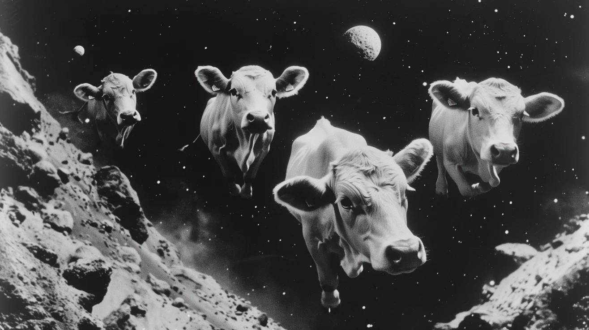

Introduction
The Novel
Space Chantey (1968) is R. A. Lafferty's science fiction retelling of Homer's Odyssey. Published by Ace Books as half of an Ace Double (paired with Ernest Hill's Pity About Earth), the novel follows Captain Roadstrum and his hornet crews on their decade-long journey home after a ten-year war—a journey that takes them through pleasure planets, giant-inhabited worlds, cyclops dungeons, witch-ruled islands, and even Hell itself.
The parallels to Homer are explicit. Lotophage recasts the Lotus Eaters; Lamos gives us the Laestrygonian giants; Polyphemia offers a Cyclops episode with a twist; Aeaea is Circe's island where men become beasts. Yet Lafferty is never faithful to his source. He inverts, subverts, and reimagines, treating the Homeric template as a jazz standard to be improvised upon rather than a score to be reproduced.
First Edition: Ace Books, 1968 (Ace Double H-56)
Paired with: Pity About Earth by Ernest Hill
Cover & Interior Sketches: Vaughn Bodé
Length: Approximately 45,000 words (8 chapters)
Roadstrum
Captain Roadstrum, Margaret the Houri, and other characters from Space Chantey appear in several related Lafferty stories.
| Aspect | "Hound Dog's Ear" | "Maybe Jones and the City" |
|---|---|---|
| Plot Summary | A crew of ten heroes, presumed dead, is resurrected on Tir Tairngiri after emerging from fiery stone encasements. They face skepticism from the locals, who doubt their existence and heroic pasts, while attempting to prove their reality and reclaim their place in the cosmos. | Maybe Jones, a legendary wanderer, joins a team building the "Perfect Place" after achieving immortality. He samples reconstructed historical cities but finds them lacking, inspiring the creation of an eternal utopia tailored to his ideal of endless exuberance. |
| Protagonists | Captain Roadstrum, leader of the resurrected Hornet crew, battling to assert their existence. | Maybe Jones, a high-flying dreamer seeking to recreate the Perfect Place he once experienced. |
| Margaret the Houri | Flamboyant member of the Hornet crew, known for her style, emerging dramatically from stone. | A lively contributor to the utopian project, dismissing discernment to embrace exuberance and the pursuit of endless pleasure. |
| Supporting Characters | Hondstarfer (boy-giant with hammer skills), Fergus McRoy (skeptical local hero), Finn McCool (supportive hero). | High-Life Higgins, Good-Time Charley Wu, Hilda the Hoop, and other colorful figures in the Bureau of Wonderful Cities. |
| Themes | Resurrection, defiance of skepticism, and the tension between mythic heroism and scientific rationality. | The pursuit of eternal joy, freedom from mortality, and the contrast between historical recreations and personal utopian visions. |
| Setting | Tir Tairngiri, a mythical world filled with skepticism, rituals, and cosmic significance. | A futuristic, immortal society constructing tailored utopias, with excursions into legendary cities like Sodom, Pompeii, and Lisbon. |
The Lay of Road-Storm from the ancient Chronicles
Synopsis
A complete overview of the novel's plot—ten equivalent years compressed into eight chapters of comic-epic adventure.
I. Lotophage
The ten-year war is over. Six hornet captains and their crews are mustered out with optional travel orders. A sixth captain (who shall be nameless forever) takes his crew directly home, but the other five—led by Roadstrum and Puckett—detour to Lotophage, the legendary pleasure planet where it is always afternoon.
The world is seductive beyond imagining: every pleasure available, every desire fulfilled. But there is a price. The Lotophagians process visitors into "Ecstasy Chips"—rendered down for their psychic residue and consumed as delicacies. Crewmen Birdsong and Fairfeather, deemed too ugly for the pleasures, are thrown into a dungeon. The others sink into narcotic bliss.
Roadstrum, "one man in a million," rouses himself at the last possible moment. With the help of Margaret the houri (who has been trapped on Lotophage for millennia) and Deep John the Vagabond (an ancient hobo who cannot find his way home), he kicks the men awake and loads them into two hornets. They escape with perhaps forty men—the rest have already been processed into chips and eaten.
II. Lamos
Both hornets are damaged from their time on Lotophage. They limp to Lamos, a heavy-gravity world inhabited by Groll's Trolls—giants who speak something between Old Norse and Icelandic. The giants call their world Valhal.
The giants are hospitable in their terrible way: they feed the men an enormous breakfast and then hunt them down and kill them in glorious battle. But this is Valhalla—heroes who die in battle are reborn each morning to fight again. Crewmen Birdsong and Fairfeather, throwing themselves into combat with wholehearted joy, become giants themselves.
The boy Hondstarfer, a young giant who is "mechanically inclined," repairs the hornets using stone hammers. When Roadstrum and the surviving men attempt to leave, the giants exact a price: they cut out every man's tongue to ensure they never reveal how much fun Valhalla really is. The men escape, bleeding and green, and craft false tongues to replace what they have lost.
III. The Clashing Rocks
Lost in space, the hornets enter "the rocks wandering"—a thick asteroid belt that proves to be something stranger than asteroids. The rocks multiply, snort, and stampede. They are the sacred cattle of the sun, and the men—seized by ancestral compulsion—rope a calf-rock, kill it, and roast it over space-primus fires.
For this sacrilege, a black sun begins to age them rapidly. Deep John dies at extended old age. The crewmen wither. Roadstrum himself turns a hundred, then a hundred and twenty. Only Margaret, who is not quite human, remains unaffected.
At the last moment, Roadstrum pushes the "Dong button"—a device Hondstarfer installed during the repairs—which reverses time itself. The men regurgitate the sacred beef, reassemble the calf-rock, and back out of the entire episode. They emerge at the exact moment they entered, having lost no time at all.
IV. Roulettenwelt and the Siren-Zo
On Roulettenwelt, the gamblers' world, Roadstrum discovers that the Dong button lets him replay any bet until he wins. He takes on the greatest gamblers in the universe—Johnny Greeneyes, Pyotr Igrokovitch, Sammy the Snake—and wins a thousand worlds. Then he visits the men's room, leaving the Dong button in the hornet. A crafty attendant challenges him to double-or-nothing. Roadstrum loses everything, including the thousand worlds and twenty-four more he must somehow acquire.
On Kentron-Kosmon, the exact center of the universe (according to its own plaque), the men encounter Atlas—a big, good-natured fellow who literally keeps everything going by observing it. On a nearby world, they find the Siren-Zo: a singing mountain that lures men to their deaths with an incomplete melody. The men climb into its maw and kill it from within, finally hearing the missing note as the creature dies.
V. Polyphemia
Puckett's hornet breaks down (as Hondstarfer had warned it would), and both craft land on Polyphemia—a pastoral world of simple shepherds. But the sheep are not sheep: they are men who have been transformed and fattened for slaughter. The "shepherds" are the Polyphemians, cyclopean monsters who keep their human livestock docile and well-fed.
The hornet men are thrown into a dungeon and fattened with rage-inducing mushrooms. One by one, they are taken out and eaten at nightly banquets. But they have an ace: Esolog-9-Ex, a "build-it-yourself pseudanthropus kit" they have assembled into the most succulent-looking man imaginable. When the Polyphemians finally eat him at a great feast, he explodes within them, swelling them to a thousand times their size and destroying them utterly. The men escape—though Margaret, who ate "just a sliver," begins to swell alarmingly as they flee.
VI. Aeaea
Lost in illusion-space, the hornet rams what appears to be a fake world—and finds it half-real. This is Aeaea, the contingent planet of the witch who shares its name. Aeaea is a scientist of total subjectivity: she makes things real by perceiving them as real, and she perceives the hornet men as animals.
Captain Puckett becomes a raccoon. Crewman Humphrey becomes a camel. Crewman Eseldon becomes an ass. Only Roadstrum, who has become an ape, retains enough of his nature to understand what has happened. He rallies the transformed crewmen: if they must be animals, let them be real animals, not Aeaea's toy versions.
What follows is described as "horrifying, animal, human slaughter"—the men tear Aeaea apart, Margaret leading the assault in tiger form. The witch dies (though she insists she is unhurt), and the men flee as the contingent world fades around them. They are now outlaws, wanted throughout space for the Songstress Murder.
VII. Guimbarde Town and Hell
Hunted by sky-police, the men take refuge in the High Liars Club—the most exclusive club in the universe, located a hundred-odd stories up a rickety wooden building in Guimbarde Town on Yellow Dog, a proscribed world. To gain entry, one must tell lies of surpassing quality; to fail is to have one's throat slit.
The men qualify brilliantly, but a sherlocker (the finest tracker in the universe) has followed them. He blows his whistle, and three hundred coppers drag them away to Hellpepper Planet—the place from which there is no returning.
But Hell is a disappointment. It has all the traditional tortures, but everything is too small, too crowded, too mean. The Roadstrum who had expected towering flames finds only high-frequency cookers. Worse, they intend to miniaturize the men to fit them in. Outraged at this second-rate Hell, Roadstrum leads a breakout—the first ever—and the men escape into the boiling swamps beyond.
VIII. World
Roadstrum comes home alone, broke and bewhiskered, to Big Tulsa on World. His wife Penny has been entertaining suitors for twenty years. His son Tele-Max is still small (a runt, apparently). The artificial trees have replaced the real ones, which died from the noise of Penny's parties.
He kills the suitors—more than a hundred of them—as seems to be expected. He has everything now: his wife, his fortune (there were accounts Penny didn't know about), honor, respect, peace.
Peace. The word explodes inside him. He is Roadstrum! Peace is not for such as he. He erupts out of his house, gives great voice, and summons a new crew: Trochanter (addled but game), Margaret (abandoning her arty affectations), Clamdigger (living in a junk hornet shell), and Hondstarfer (who can fix anything with his stone hammers).
The coded chatter reports his ship destroyed beyond the orb of Di Carissimus, become a novanissimus. He's gone, he's dead, he's dirt. But make no mistake—this only seems the end of it.
Odyssey Parallels
Mapping Lafferty's space epic to Homer's original—and noting where he diverges, inverts, and improvises.
The Framework
Lafferty follows the Odyssey loosely rather than slavishly, treating Homer's epic as a jazz standard to be improvised upon. Some parallels are exact; others are inverted or combined; a few episodes are Lafferty's own inventions with no Homeric source. The ordering differs from Homer's: Lafferty presents events largely in chronological sequence rather than using the Odyssey's elaborate flashback structure.
Roadstrum = Odysseus (the name "Road-Storm" echoes the etymology of Odysseus as "man of suffering" or "man of the road")
Penny = Penelope (faithful wife beset by suitors)
Tele-Max = Telemachus (the son left behind)
World = Ithaca (the home longed for)
The Ten-Year War = The Trojan War
Three Heroes Compared
Roadstrum stands in relation not only to Homer's Odysseus but also to Jason of the Argonautica. Lafferty draws on both heroic models—and parodies both.
| Aspect | Jason (Argonautica) | Odysseus (Odyssey) | Roadstrum (Space Chantey) |
|---|---|---|---|
| Leadership Archetype | Proto-heroic leader whose success depends on collective effort and divine intervention, not individual glory. | Individualist hero whose journey foregrounds personal cunning, adaptability, and endurance. | Deconstructs both archetypes, blending Jason's reliance on crew with Odysseus's cunning—undermined by parody and absurdity. |
| Role of the Crew | The Argonauts are heroic yet fragmented; their individuality often supersedes Jason's authority. | The crew is subservient but flawed, representing the vulnerabilities of mortal ambition and disobedience. | Parodies both, blending chaos, flawed loyalty, and absurd heroics (e.g., roping the calf-rock). |
| Divine Intervention | Relies heavily on Athena and Medea, reinforcing divine hierarchy and mortal reliance on external power. | Receives guidance from Circe, but his agency reflects tension between free will and divine oversight. | Lacks divine intervention, navigating chaos with flawed human ingenuity, exposing mortal fallibility. |
| Navigational Paradigm | The Clashing Rocks (Symplegades) allegorize nature's untamed forces, navigable only through divine harmony. | The Wandering Rocks represent unpredictable chaos, avoided through divine wisdom and humility. | The "rocks wandering" invert navigational logic, mocking human attempts to rationalize chaos. |
| Symbolism of the Rocks | Cosmic order, navigable only through synchronicity with divine will. | Chaos and inevitability, reinforcing human dependence on divine foresight. | Postmodern commentary on entropic absurdity, subverting traditional mythic symbols. |
| Thematic Function | Affirms the heroic journey's stakes—a rite of passage testing leadership and divine favor. | Signifies existential humility, highlighting limits of human action within divine caprice. | Subverts both, presenting no clear stakes or resolutions—the absurdity of heroism in a meaningless universe. |
| Tone and Aesthetic | Balances solemnity with triumph, emphasizing the sacrality of divine order. | Maintains epic gravitas, foregrounding divine agency over mortal hubris. | Employs parodic aesthetic, mocking mythic solemnity through humor and existential critique. |
| Resolution and Legacy | Passage through the Rocks establishes a new paradigm, symbolizing humanity's ability to transcend limits. | Avoidance underscores prudence as heroic virtue, maintaining divine order through deference. | Failure to control the rocks leads to further chaos, deconstructing the mythic hero's legacy. |
Episode-by-Episode Parallels
Chapter I: Lotophage — The Lotus Eaters
Homeric Source: Odyssey IX.82–104
In Homer, the Lotus Eaters offer a plant that makes men forget their homeland and desire only to stay. In Lafferty, Lotophage is a pleasure planet where it is always afternoon—visitors sink into narcotic bliss until they are processed into "Ecstasy Chips" and eaten. The danger is not the lotus plant but the planet itself, which seduces men into forgetting their desire to leave.
Lafferty's Twist: The Lotus Eaters are not passive hosts but active consumers—they eat the visitors rather than merely drugging them. The "last possible moment" becomes a recurring phrase.
Chapter II: Lamos — The Laestrygonians
Homeric Source: Odyssey X.80–132
Homer's Laestrygonians are cannibal giants who destroy eleven of Odysseus's twelve ships by hurling boulders. In Lafferty, the giants of Lamos (also called Valhal) are Groll's Trolls who speak Old Norse. They are Valhalla's warriors—they kill visitors in glorious daily combat, but the dead are reborn each morning to fight again.
Lafferty's Twist: The violence becomes cyclical and even companionable. The tongue-cutting is Lafferty's invention—a dark joke ensuring the men cannot tell anyone how much fun Valhalla really is.
Chapter III: The Clashing Rocks — Symplegades + Cattle of the Sun
Homeric Sources: Odyssey XII.55–72 (Wandering Rocks, mentioned but not encountered) and XII.127–141, 260–419 (Cattle of Helios)
Lafferty combines two separate Homeric episodes. The "rocks wandering" become an asteroid belt that is actually a herd of sacred space-cattle. When the men kill and eat one (as Odysseus's crew ate the cattle of Helios), they are cursed—but here the curse is rapid aging rather than death by shipwreck.
Lafferty's Twist: The Dong button allows time reversal, enabling the men to undo their sacrilege entirely. This is pure Lafferty—no Homeric parallel exists for escaping divine punishment through temporal manipulation.
Chapter IV: Roulettenwelt — No Direct Parallel
Homeric Source: None (Lafferty's invention)
The gamblers' world has no Homeric counterpart. It represents Lafferty's interest in chance, fortune, and the reversal of fortune. The episode where Roadstrum wins a thousand worlds and loses them to a bathroom attendant is comic hubris—the mighty brought low not by gods but by luck.
Chapter IV (continued): Kentron-Kosmon — Atlas
Homeric Source: Odyssey I.52–54 (Atlas mentioned as Calypso's father)
Atlas appears in the Odyssey only as a reference. Lafferty makes him a character who keeps the universe running by constantly observing it—a comic application of Berkeley's idealism.
Chapter IV (continued): The Siren-Zo — The Sirens
Homeric Source: Odyssey XII.36–54, 153–200
Homer's Sirens sing from an island; Odysseus has his men plug their ears with wax while he listens bound to the mast. Lafferty's Siren-Zo is a singing mountain-spider creature whose song is missing its final note. Men are drawn to hear the completion and die in the attempt.
Lafferty's Twist: Rather than resisting the song, the men climb into the creature and kill it from within, finally hearing the missing note as it dies in agony. They defeat the Sirens by violence rather than cunning.
Chapter V: Polyphemia — The Cyclops
Homeric Source: Odyssey IX.105–542
This is Lafferty's most elaborate Homeric parallel. Homer's Polyphemus is a one-eyed giant who traps Odysseus's men in his cave and eats them two by two. Odysseus escapes by blinding the Cyclops and hiding under sheep.
Lafferty inverts the imagery: the Polyphemians are cyclopean shepherds, but their "sheep" are transformed humans. The men are not hidden under sheep—they become sheep, fattened for slaughter. The escape comes not through blinding but through Esolog-9-Ex, the booby-trapped automaton.
Lafferty's Twist: The "Nobody" trick (Odysseus's famous deception) is replaced by something more visceral—the enemy is destroyed by exploding from within after consuming the disguised weapon.
Chapter VI: Aeaea — Circe
Homeric Source: Odyssey X.133–574
Homer's Circe is a witch who turns men into pigs. Odysseus, protected by the herb moly given by Hermes, resists her magic and becomes her lover for a year. She eventually helps him on his way.
Lafferty's Aeaea turns men into various animals through "total subjectivity"—if she sees them as animals, they become animals. There is no moly, no divine protection. Instead, Roadstrum realizes that to escape they must become real animals rather than Aeaea's toy versions.
Lafferty's Twist: The men kill Circe. In Homer, she is a helper who gives Odysseus crucial advice; in Lafferty, she is torn apart by the men she has transformed. This is the "Songstress Murder" that makes them outlaws.
Chapter VII: Guimbarde Town — No Direct Parallel
Homeric Source: None (Lafferty's invention)
The High Liars Club has no Homeric counterpart. It represents Lafferty's meditation on storytelling itself—the epic as a club where only the best tall tales qualify for membership.
Chapter VII (continued): Hellpepper Planet — The Underworld
Homeric Source: Odyssey XI (the Nekuia)
In Homer, Odysseus visits the underworld to consult the prophet Tiresias. He meets the shades of the dead, including his mother and fallen comrades. It is a solemn, melancholy episode.
Lafferty's Hell is a disappointment—cramped, bureaucratic, and second-rate. Tiresias ("Blinky") is a petty judge. The tortures exist but are miniaturized to fit. The men break out, the first ever to do so, simply because their expectations were too high for such a mean establishment.
Lafferty's Twist: Hell fails to meet heroic standards. The underworld is not awesome but inadequate.
Chapter VIII: World — The Homecoming
Homeric Source: Odyssey XIII–XXIV
Homer devotes nearly half his epic to the homecoming: Odysseus's disguised return, the recognition scenes, the slaughter of the suitors, the reunion with Penelope. Lafferty compresses this to a few pages.
Roadstrum comes home, finds suitors, kills them. But where Homer ends with the hero restored to his kingdom, Lafferty's Roadstrum cannot accept peace. He erupts out of his house and summons a new crew. The epic refuses to end.
Lafferty's Twist: The final inversion. Odysseus's goal throughout is to reach home; having reached it, Roadstrum rejects it. Peace is not for such as he. The voyage is the meaning, not the destination.
Episodes Omitted or Transformed
Several major Homeric episodes are absent or barely referenced in Space Chantey:
Calypso: The nymph who keeps Odysseus for seven years has no direct counterpart. Margaret the houri may be a faint echo—an immortal woman who joins the voyage—but she is a companion rather than a captor.
Nausicaa and the Phaeacians: The civilized hosts who help Odysseus home are absent. There is no equivalent to Odysseus's telling of his tale at Alcinous's court.
Scylla and Charybdis: The famous choice between monsters is not present, though the Clashing Rocks chapter gestures toward maritime hazards.
The Bow Contest: Odysseus proves himself by stringing his great bow and shooting through twelve axe-heads. Roadstrum's son mentions this as family legend ("You impressed them by shooting an arrow through twelve holes"), but Roadstrum doesn't remember what an arrow is.
Epic Terms Glossary
Classical epic conventions employed in Space Chantey and their Homeric precedents.
| Epic Term | Definition | Space Chantey | Example from The Odyssey |
|---|---|---|---|
| Aidos | Shame, respect, or disgrace. | Captain Puckett's humiliation during his failure to act heroically at Lotophage reflects his aidos. | Penelope's fidelity to Odysseus despite the suitors' advances shows her adherence to aidos. |
| Anagnorisis | Moment of recognition or realization. | Roadstrum's realization that Hell's miniaturized landscape is not the grand torment he imagined. | Odysseus's recognition of his homeland Ithaca, triggered by the olive tree. |
| Aition | Cause or origin. | The origins of the slab cars' static-repulsion mechanism are revealed through Hondstarfer's explanation. | The story of Troy in The Odyssey explains Troy's fall. |
| Alazon-Eiron | Boastful figure contrasted with understated wit. | The giants' mocking confidence contrasts with Roadstrum's tactical cunning. | Polyphemus's boasts to "Nobody" contrasts with Odysseus's clever anonymity. |
| Anthropomorphism | Attributing human characteristics to gods or animals. | Margaret's transformation into a cat and her subsequent behavior. | Athena's disguises, in role as Mentor, show divine anthropomorphism. |
| Arete | Virtue or excellence in action or character. | Roadstrum's leadership and courage as he leads his crew through the battle with the giants. | Odysseus shows arete in escape from the Cyclops's cave. |
| Aristeia | A warrior's finest moment in battle. | Roadstrum's decisive attack on the Siren-Zo, culminating in the creature's destruction. | Odysseus's slaying of the suitors is a display of his prowess and restoring order. |
| Ate | Madness, folly, or blindness imposed by the gods or fate. | The crew's obsession with indulgence on Lotophage, knowing its dangers. | The suitors' arrogant refusal to leave Odysseus's home reflects their madness and impending doom. |
| Catalogues | Epic lists or detailed enumerations. | The detailed description of the breakfast feast, with items like "honey-mead in casks big enough to live in." | The catalogue of ships in The Iliad mirrors Homeric catalogues referenced in The Odyssey. |
| Chiasmus | Mirrored or symmetrical structure for balance. | The balance between the crew's hedonism on Lotophage and their desperate struggle in the giant's lair. | The symmetry of Odysseus's journey, departing from Ithaca and returning under disguise. |
| Chthonic Imagery | Underworld or earth-related symbolism. | The giant's underground cave with its eerie light and unsettling echoes evokes chthonic imagery. | Odysseus's descent into the Underworld to consult Tiresias is a defining example. |
| Cosmic Imagery | Universal or expansive descriptions. | Descriptions of the vastness of space and the planets' strange physics. | The gods' manipulation of Odysseus's fate spans the cosmos. |
| Dactylic Hexameter | Epic meter with six dactyls (long + two shorts). | The prologue's lyrical parody mimics the structure of dactylic hexameter. | The Odyssey is composed entirely in dactylic hexameter. |
| Deus ex Machina | Unexpected, divine resolution. | The Polyphemian feast ends with a sudden explosion of the pseudanthropus trap. | Athena's intervention to stop the fighting between Odysseus and the suitors' families. |
| Dolos | Trickery or deceit. | Roadstrum devises the plan to use slabs as both weapons and defenses. | Odysseus's famous dolos in the Cyclops's cave includes naming himself "Nobody." |
| Ekphrasis | Vivid description of an object or scene. | The slab cars' flight mechanics are described in vivid detail. | The description of Achilles' shield in The Iliad is a foundational example. |
| Foreshadowing | Hints or clues about future events. | The strange hospitality on Lotophage foreshadows the dangers of its temptations. | Tiresias's prophecy about Odysseus's struggles and eventual return home. |
| Geras | A gift of honor reflecting the recipient's achievements. | The giants' grotesque feast acts as a distorted geras. | Odysseus receives gifts of gold and fine goods from King Alcinous. |
| Hubris | Excessive pride leading to downfall. | The giants' dismissive attitude toward the crew's weapons. | The suitors' unchecked arrogance and disregard for Odysseus's home. |
| Invocation | Call to the muse or divine inspiration. | The prologue mimics the classical invocation. | Homer begins The Odyssey with an invocation to the Muse. |
| Katabasis | Descent into the underworld or a similar perilous journey. | The crew's journey into the mountain lair of the giants mirrors a symbolic katabasis. | Odysseus's descent into the Underworld to consult Tiresias. |
| Kleos | Fame or renown earned for deeds. | Roadstrum's exploits, especially his victory over the giants. | Odysseus's tales of cunning and endurance, recounted by Demodocus. |
| Leitmotif | Recurring theme or symbol. | The giants' booming laughter, echoing during both their feasts and battles. | The theme of xenia (hospitality) recurs throughout The Odyssey. |
| Metis | Cunning intelligence. | Roadstrum uses metis to turn the giants' overconfidence against them. | Odysseus's metis is evident in his deception of Circe. |
| Moira | Destiny or allotted fate. | The crew acknowledges their cosmic moira as voyagers bound to face peril. | Odysseus accepts his moira as foretold by Tiresias. |
| Nemesis | Righteous indignation or divine retribution. | Margaret's violent attack on Aeaea, destroying her manipulative powers. | The suitors face nemesis as Odysseus delivers retribution. |
| Nostoi | Return voyage. | Roadstrum's eventual return to World. | Odysseus's return to Ithaca after years of struggle. |
| Panegyric | Formal public praise. | The giants ironically celebrate Roadstrum's "heroic" deeds. | Demodocus's song of Odysseus's exploits during the Trojan War. |
| Pathos | Emotional appeal. | Margaret's choice to stay behind, understanding her cosmic nature. | Odysseus's tearful reunion with Penelope. |
| Penthos | Grief or suffering. | The deaths of Roadstrum's crew during battles with the giants. | Odysseus mourns the loss of his comrades. |
| Polytropos | Adaptable and resourceful. | Roadstrum's quick adaptation to the giants' strength. | Odysseus, described as "the man of many wiles." |
| Proem | Opening statement setting the theme. | The prologue humorously questions the endurance of heroism and myths. | Homer begins The Odyssey with an invocation to the Muse. |
| Sacrifice | Ritual offering or act of giving up something of value. | The crew's sacrificial slaughter of the sacred calf-rock. | Odysseus sacrifices black rams to appease the spirits of the Underworld. |
| Threnody | A lament for the dead. | Roadstrum offers a solemn yet ironic tribute to Captain Puckett. | The Trojan War's dead are mourned in reflective laments. |
| Timē | Honor or recognition earned through virtue and deeds. | Roadstrum earns timē through his victories. | Odysseus earns timē through his feats. |
| Xenia | Guest-friendship or the bond between host and guest. | The Polyphemians initially appear to honor xenia but ultimately betray it. | King Alcinous exemplifies xenia by providing Odysseus with hospitality and safe passage. |
Chapter I
Lotophage
The Lotus Eaters—where it is always afternoon, and visitors are rendered into Ecstasy Chips.
Summary
The ten-year war is finished—"neither of long duration nor of serious attrition," having taken only ten million lives. Six hornet captains and their crews are mustered out. Five of them, led by Captains Roadstrum and Puckett, decide to detour to Lotophage, the legendary pleasure planet. A sixth captain (who shall be nameless forever) takes his "craven" crew directly home.
Lotophage is "beautiful at planetfall, subdued gold, afternoon color." It is impossible to approach from the morning side—the planet exists in perpetual afternoon. The men discover paradise: every pleasure is available, every desire anticipated. The Sleepy Sailor tavern becomes their headquarters.
But paradise has teeth. Crewmen Birdsong and Fairfeather, judged too ugly for the pleasures, are thrown into a dungeon. The others sink into narcotic bliss while the Lotophagians process earlier visitors into "Ecstasy Chips"—psychic residue rendered from men who have "spread themselves" too thin in pursuit of pleasure. "Lazy Man Ecstasy Chips" have a particularly fine flavor.
Roadstrum, warned by Margaret the houri and Deep John the Vagabond, rouses himself at "the last possible moment." He kicks the men awake—some cling to grass-handles, refusing to leave—and loads them into two hornets. They escape with perhaps forty men; the rest have already been eaten.
Key Events
The Six Captains: Roadstrum, Puckett, Dempster, Silkey, Kitterman, and the Nameless One assemble after the war. Five vote to detour to Lotophage; the sixth goes directly home and is erased from the epic.
First Skin Shed: Roadstrum announces that he has "shucked a skin like a yearly snake"—the first shedding of the "onion self" motif that will recur throughout the novel. This is "Young Soldier the First Time."
Planetfall: The hornets arrive at Lotophage. Roadstrum tries to approach from the morning side but fails—the planet exists only in afternoon.
The Dungeon: Birdsong and Fairfeather are imprisoned for ugliness. Only beautiful persons are allowed Lotophage's pleasures.
The Sleepy Sailor: The men sink into pleasure at this tavern. Roadstrum has a plaque made: "Great Roadstrum loused around here."
Ecstasy Chips: The Lotophagians serve the men chips rendered from earlier visitors. Crewman Oldfellow remarks that they remind him of Crewman Bigbender—because they are Crewman Bigbender.
Margaret's Warnings: The houri repeatedly gives the lobster parable: "To boil a lobster, one takes first a lobster... one puts it in cold water... one very very slowly brings it to a boil..."
The Awakening: Roadstrum, "one man in a million," rears up "like a great bear coming out of hibernation on Saint Casimir's Day" and begins kicking men awake.
The Escape: Birdsong and Fairfeather are released from the dungeon when two even uglier men arrive. The survivors pile into two hornets and escape. On Lotophage, it is still afternoon of the same day.
Characters Introduced
Captain Roadstrum: "As plain a man as ever lived," commander of the lead hornet and protagonist of the epic. First appears saying he wants to go home—but could be talked into something else.
Captain Puckett: Roadstrum's fellow captain from World, who suggests the Lotophage detour. Commands the second hornet.
Captains Dempster, Silkey, Kitterman: Other hornet captains. Silkey "knew how to put the needle" into Dempster.
The Nameless Captain: The sixth captain who goes directly home. "He shall be nameless, he shall be nameless forever."
Crewman Birdsong: One of the ugliest men in the crews. Sent to the dungeon on Lotophage but released when uglier men arrive.
Crewman Fairfeather: Fellow ugly. Shares Birdsong's dungeon sentence.
Margaret the houri: A being who has been trapped on Lotophage "for several thousand years," waiting for a man able to leave. She joins Roadstrum's crew. "I used to have a lot of fun on World."
Deep John the Vagabond: "John Profundus Vagabundus," the original old-time hobo. Has been wandering for thousands of years and cannot find his way home. Sings "Show Me The Way To Go Home."
Crewman Bramble: First appears reciting doggerel verse about the "golden worm that gnaws and gnaws."
Crewmen Crabgrass, Oldfellow: Crew members who voice discontent with the "sleepy gooney" atmosphere.
Homeric Parallels
The episode draws on Odyssey IX.82–104, where Odysseus's scouts eat the lotus plant and lose all desire to return home. Lafferty elaborates considerably: the lotus effect is not a plant but the entire planet's nature, and the Lotophagians do not merely drug visitors but process them into food.
The "last possible moment" motif has no direct Homeric source but captures the essence of Odysseus's perpetual escapes from seductive traps (Calypso, Circe, the Sirens).
Notable Passages
The novel's opening meditation on whether mythology can survive the space age.
The introduction of the hornet crews.
Roadstrum's first articulation of the "onion self" theme.
Margaret's despair—before Roadstrum proves himself.
Thematic Notes
The Mythology Filter: The chapter opens with Lafferty's manifesto on epic and mythology. "The deeds were too bright to be viewed direct. They could only be sung by a bard gone blind from viewing suns that were suns." This frames the entire novel as filtered through the epic tradition.
The Onion Self: Roadstrum introduces the image of himself as an onion shedding layers. This first skin is "Young Soldier the First Time"—the naive warrior identity he leaves behind on Lotophage.
Pleasure vs. Motion: Lotophage represents the temptation of stasis—perfect pleasure without effort or risk. The men who stay become literally consumed by it. Roadstrum's ability to leave marks him as exceptional.
The Nameless: The captain who goes directly home is denied a name in the epic. Lafferty suggests that choosing safety over adventure erases one from the heroic record.
Chapter II
Lamos
The Laestrygonians—giants who cut out tongues for souvenirs, where heroes die gloriously every day.
Summary
Both hornets are "near inoperative"—sluggish since Lotophage. Puckett's craft is failing; Roadstrum's is nearly as bad. The only world they can reach is Lamos, a heavy-gravity primitive world inhabited by "Groll's Trolls"—giants speaking something between Old Norse and Icelandic. The men psyche-learn the language during their fifteen-minute descent and crash-land hard.
The giants, led by Bjorn, are hospitable in their terrifying way. They invite the men to "the big breakfast"—whole roasted bulls—and then to "the big fight" where all must die before sundown. Stone slabs fly through the air on the "static-repulsion principle" (the giants' science, far beyond electromagnetic technology). The men fight gloriously and are slaughtered.
But this is Valhal—Valhalla. Heroes who die in battle are reborn each morning. The cycle repeats: breakfast, battle, death, rebirth. Crewmen Birdsong and Fairfeather, throwing themselves into combat wholeheartedly, become giants. Roadstrum and Puckett, who held mental reservations, remain human-sized.
Margaret the houri reforms the daily schedule, demanding "one hour for the women." The boy Hondstarfer repairs the hornets with stone hammers. When the men attempt to leave, the giants exact their price: they cut out every man's tongue to ensure the secret of Valhalla's pleasures is never told. Bleeding and speechless, the men escape to craft false tongues and fly on.
Key Events
The Crash: Both hornets make a brutal landing on high-gravity Lamos. "It knocked everybody out, cracked ribs and clavicles, ruptured lungs and diaphragms, and filled everybody with blood in mouth, nose, and ear."
Meeting the Giants: Bjorn and his fellows surround the crash site. The men do not reach to the giants' navels. Margaret speaks to them in Old Norse.
The Flying Stone Slabs: The giants' transportation—stone slabs that fly on the "static-repulsion principle," steered by rubbing felt-booted feet on them. Crewman Bramble declares it impossible; the boy Hondstarfer explains the supreme scientific law: "Like charges repel."
The Big Breakfast: The giants feast on whole roast bulls, skinned bare-handed and speared on pikes held up to the "little sun" (a captured asteroid that serves as an interior light source). The men cannot eat a whole bull each.
The Daily Battle: All fight to the death before sundown. This is Valhalla's eternal combat. The battles are described in detail—Roadstrum afflicted with "the heroes' disease" (a fever that strikes every third day at sundown) fights Bjorn in aerial combat on stone slabs. Both die, transfixed on each other's spears.
Resurrection: "Come to the breakfast!" The dead awaken. The cycle continues. Birdsong and Fairfeather have become giants; others remain human.
Margaret's Reform: She smashes the sundial and demands time for women. "There has to be time for the women."
Hondstarfer's Repairs: The giants' mechanically-inclined boy fixes both hornets with stone hammers—one of them has buckskin for "the fine work." He removes the main drives ("I couldn't see any use for a lot of that stuff") but claims the ships will fly. One will work perfectly; one will break down again later.
The Tongue-Cutting: The giants will not let the men leave without insurance: every tongue is cut out, "roots and all." The men write in their own blood that they will never tell anyone how much fun Valhalla is. They escape, gagging and green.
The Battle: Phase by Phase
The daily combat on Lamos unfolds in distinct tactical phases as the crew adapts to fighting giants on flying stone slabs.
| Phase | Description |
|---|---|
| 1. Initial Skirmish (Air and Ground) |
Both sides mount stone slab "cars" and engage in aerial combat. Crew struggles to maneuver slabs and hit giants with blasters. Giants, adept at aerial combat, attempt to spear the crew. Three crewmen are killed but manage to take a giant with them each time. Captain Roadstrum orders the crew to ground their slabs and form defensive rings. |
| 2. Ground Defense and Aerial Assault | Crew forms rings of five men each, hoping to improve aim and outrange the giants. Giants drop slabs in a "dead-fall" tactic, killing five men at once. Roadstrum orders the crew to scatter and seek cover, realizing the vulnerability of static positions. |
| 3. Aerial Counteroffensive | Crew is forced back into the air, adapting to aerial combat with blasters and evasive maneuvers. Deep John, the Vagabond, uses a sharp-edged slab to decapitate giants. Giants continue to dominate with slabs as shields and spears as weapons. |
| 4. Haven Defense | Crewman Bramble discovers a protected stone platform under an overhanging ledge. Crew establishes a defensive position, forcing giants to expose themselves to blaster fire. The crew defends successfully but suffers casualties, with the haven becoming crowded with fallen giants. |
| 5. "Noon Break" and Resumption | Bjorn calls for a one-hour break, allowing both sides to rest. Roadstrum expresses confusion about the conflict. Bjorn reveals that the crew is being treated as honored guests in a deadly game. Bjorn warns the crew to return to their haven, killing the last man to arrive. |
| 6. Siege of the Haven | Giants bombard the haven with large rocks, injuring and killing crew members. Crew maintains a favorable kill ratio, targeting giants who venture too close. |
| 7. Final Confrontation (Aristeia) |
Only Roadstrum and Puckett remain. Puckett faces Bjorn in a heroic last stand and dies. Roadstrum takes on Bjorn in an aerial duel. Both heroes die in a mutual kill, transfixed on each other's spears as they fall from the sky. |
Characters Introduced
Bjorn: Leader of the Laestrygonian giants. "A voice that sounded as though he had great boulders grinding around in his gizzard." Fights Roadstrum in the climactic aerial duel and laughs as he dies.
Hondstarfer: Bjorn's "little boy" (a meter taller than Roadstrum). "Mechanically inclined"—repairs the hornets with stone hammers. Later travels to World via time machine to become an old-time railroad hobo. A "seminal genius" who will reappear in Chapter VIII.
Hross, Hjortun, Fjall, Kubbur, Blath, Hrekkur: Other Laestrygonian giants with appropriately Norse names.
The Laestrygonian Women: "Dame elephants rather"—large, almost shapeless, "smiling and mysterious and ineffably wild." Crewmen Birdsong and Fairfeather are attracted to them.
Characters Developed
Crewman Birdsong: Reveals his capacity for transformation—throws himself into battle wholeheartedly and becomes a giant.
Crewman Fairfeather: Follows Birdsong's path to gianthood. Both remain on Lamos.
Roadstrum: First mention of "the heroes' disease"—an infection caught during the war that produces heroic fever every third day at sundown. It makes him do rash things.
Margaret: Shows her assertiveness, demanding reform of the Valhalla schedule. "You are going to have to find one hour every day for [the women]."
Homeric Parallels
The episode draws on Odyssey X.80–132, where the Laestrygonians are cannibal giants who destroy eleven of Odysseus's twelve ships. In Homer, they throw boulders; in Lafferty, they fight with spears in honorable (if fatal) combat.
Lafferty transforms the episode by combining the Laestrygonians with Valhalla—the Norse afterlife where warriors feast and fight eternally. This is a distinctly non-Homeric addition, grafting Germanic mythology onto the Greek framework.
The tongue-cutting has no Homeric source but serves as Lafferty's grotesque variation on the "oath of silence" motif—the men cannot reveal what they have experienced because they literally cannot speak.
Notable Passages
Roadstrum's post-crash recovery, reduced to heroism at its most basic level.
Hondstarfer's explanation of how stone slabs fly.
Crewman Birdsong explaining the situation to Roadstrum.
Roadstrum's epitaph after his duel with Bjorn.
Roadstrum's reflection as he prepares to leave.
Thematic Notes
The Heroes' Disease: Roadstrum's heroic fever is presented as an actual infection—something he "caught" during the war. It suggests that heroism is not a choice but a compulsion, a sickness that takes over at predictable intervals.
Transformation Through Commitment: Birdsong and Fairfeather become giants by throwing themselves into battle "with a happy howling heart." Roadstrum and the others, who held "mental reservations," remain human. Full commitment to the heroic life transforms one literally.
The Price of Experience: The tongue-cutting is Lafferty's darkest image of the cost of adventure. The men have seen Valhalla; they can never speak of it. Their false tongues will trigger "False tongue" warnings on their communicators for the rest of the novel.
Second Skin Shed: The chapter ends with another layer sloughed: "One gives up giantizing most regretfully." Roadstrum could have stayed and become a giant; he chose motion over transformation.
Technical Notes
The Static-Repulsion Principle: Lamos is a dry, metal-free world of pure flint. Stone slabs fly by repelling the planet's surface—a science "so far beyond" electromagnetic technology that it seems like magic.
The Little Sun: A small captured asteroid that glows and roasts food. It responds to voice commands ("The sun, come you in") for reasons no one can explain.
Hondstarfer's Repairs: The boy removes the main drives from both hornets, calling them primitive. One hornet will work perfectly; the other will break down. This prophecy will be fulfilled in Chapter V.
Chapter III
The Clashing Rocks
The wandering rocks that stampede—and the sacred cattle of the sun whose slaughter brings the aging curse.
Summary
Lost in space, the hornets enter "the rocks wandering"—a thick asteroid belt moving at respectable speed. The rocks are rounded, gray, about the size of hornets, and "thickly clustered, one every thousand meters or so." The men ride on them, but something is wrong: the rocks have eyes "like a buffalo calf," and they multiply when no one is looking.
The communicators now constantly warn "False tongue" whenever the men speak—their manufactured tongues trigger the security sensor. Only Deep John, who escaped the Laestrygonians' knife, has a "civil tongue" in his head. Margaret's tongue also triggers the warning; the machine reads her as "something not quite human."
The rocks begin to snort, bawl, and trample. They are stampeding. The men, seized by ancestral compulsion, find themselves making running loops in ropes. At a fork in the path—Dobie's Hole or the Vortex—they take the Vortex. They rope a "calf-rock," break its neck, and roast it over space-primus fires. The meat smells like buffalo.
For this sacrilege against the sacred cattle of the sun, a black sun begins to age them. Deep John dies of old age. Crewman Oldfellow turns ancient. Roadstrum himself reaches one hundred, then one hundred and twenty. Margaret, unaffected, bakes him a birthday cake.
At the last moment, Roadstrum pushes the "Dong button"—a device Hondstarfer installed. It reverses time. The men regurgitate the sacred beef (unpleasant in reverse), reassemble the calf-rock, and back out of the entire episode. They emerge at the exact moment they entered, having lost no time.

Key Events
The Asteroid Belt: The hornets enter "the rocks wandering." The rocks seem to multiply, spawning when unobserved. They have calf-like eyes that disappear when looked at directly.
The False Tongue Warnings: First explicit mention that the communicators now constantly warn "False tongue" for all the crewmen. Deep John is the exception—"I was the only one able to keep a civil tongue in my head."
The Stampede: The rocks begin snorting, bawling, trampling—a cosmic cattle stampede. The men instinctively make lasso loops. "The name of it is stampede," Deep John says.
The Fork: Two possible exits from the rock-belt: Dobie's Hole (safe) or the Vortex (deadly). They take the Vortex.
Roping the Calf: Crewmen Crabgrass and Clamdigger go for a small rock's horns. They rope it, drag it aside, kill it, and roast it. "The horns and the hooves to Captain Roadstrum, and the fat of the hump to Captain Puckett."
The Curse: Puckett, possessed by the black sun, tells Roadstrum they must fly into the sun and be consumed for their sacrilege. The aging begins—rapidly. Deep John dies at extended old age. Roadstrum reaches one hundred.
Margaret's Birthday Cake: "Happy birthday, Captain Roadstrum... You just turned a hundred."
The Dong Button: Roadstrum pushes the button Hondstarfer installed. "Wrong prong, bong gong," says its instruction plate. Time reverses. The equivalent-day recorder runs backwards.
The Reversal: The men come back to life, regurgitate the meat, reassemble the calf. "Certain bodily functions are unusual and almost unpleasant when done in reverse." They exit through Dobie's Hole instead of the Vortex.
Characters Developed
Deep John: Confirmed as the only crewman with his original tongue. Dies of old age during the curse but is restored by the time reversal. His status as ancient wanderer is emphasized—he has been homeless for thousands of years.
Margaret: Shows her inhuman nature—unaffected by the aging curse, she cheerfully bakes birthday cakes while the men die around her. The communicator reads her tongue as false though it was never cut.
Crewman Oldfellow: Ironic name—"They called me Oldfellow because I was the youngest man in the crews." He becomes genuinely old during the curse.
Homeric Parallels
The chapter combines two Homeric episodes: the Wandering Rocks (Odyssey XII.55–72, mentioned but not encountered by Odysseus) and the Cattle of the Sun (Odyssey XII.127–141, 260–419). In Homer, Odysseus's crew slaughter the sacred cattle of Helios despite warnings; Zeus destroys their ship in punishment, and only Odysseus survives.
Lafferty merges the two: the "rocks wandering" become the sacred cattle themselves, disguised as asteroids. The curse is aging rather than shipwreck. Most significantly, Lafferty provides an escape mechanism—the Dong button—that Homer never offered. The men can undo their sacrilege entirely.
Fusing Two Episodes
| Aspect | Wandering Rocks (Homer) | Cattle of Helios (Homer) | How Lafferty Combines Them |
|---|---|---|---|
| Nature of the Challenge | Shifting, crushing rocks that destroy anything in their path—chaotic, impersonal forces. | Sacred cattle representing divine resource, whose slaughter signifies transgression. | The "rocks wandering" combine chaotic unpredictability (shifting asteroids) with sanctity (the calf-rock as sacred being). |
| Role of Divine Guidance | Circe advises Odysseus to avoid the rocks entirely. | Tiresias and Circe explicitly warn against harming the cattle. | The crew lacks explicit divine guidance but mirrors the hubris of ignoring warnings. |
| Human Agency | Odysseus avoids the rocks through humility. | The crew acts impulsively, killing the cattle out of hunger. | The crew tries to impose control (marking rocks) but devolves into impulsive chaos (slaughtering the calf-rock). |
| Symbolism | Untamed natural chaos requiring deference. | Divine ownership and mortal hubris when boundaries are crossed. | Marking the rocks like branding cattle turns chaos into sacred theft. |
| Tone | Grave and reverent—existential danger. | Solemn and moralistic—consequences of greed. | Lafferty retains chaotic menace but parodies the moral weight through absurd slaughter and roasting. |
| The Calf-Rock's Role | N/A | Central to the transgression. | Fuses both: originates from "rocks wandering" chaos but transforms into a sacred entity. |
| Sensory Experience | Crushing destruction and chaotic motion. | Vivid imagery of slaughter and feasting. | The calf-rock is visually chaotic (five times the size of a bull elephant) yet yields familiar campfire smells. |
| Divine Punishment | The rocks crush those who attempt to pass. | Zeus destroys the ship; only Odysseus survives. | Puckett fears divine punishment (echoing Zeus's wrath), but the Dong button allows escape—merging retribution with absurd ambiguity. |
Notable Passages
Crewman Oldfellow's first observation of the rocks' true nature.
Deep John's identification of what is happening.
Margaret's cheerful announcement during the aging curse.
Margaret using the word "peace" to rouse Roadstrum from his death-sleep—foreshadowing Chapter VIII.
Thematic Notes
Ancestral Compulsion: The men act out cowboy behaviors—making lassos, roping cattle—without understanding why. The "cowboy lexicon" of the epigraph suggests buried racial or species memory surfacing in crisis.
Reversibility: The Dong button introduces a new element to the epic: the ability to undo mistakes. This technological grace allows Lafferty's heroes to escape divine punishment in ways Homer's never could.
The False Tongue: The chapter establishes that the men's artificial tongues mark them as suspect—their own technology warns against them. This becomes a running element through the rest of the novel.
Technical Notes
The Dong Button: A device Hondstarfer installed during his repairs on Lamos. When activated, it reverses time by coupling with "something in the black sun." The equivalent-day recorder runs backwards. The men retain memory of the reversed events, but the universe does not.
Space-Primus Fires: Fires that can burn in space, used to roast the sacred beef. "A space-primus fire really has no odor, so how should it smell to me like sage-brush and buffalo-chips?"
Chapter IV
Roulettenwelt
The gamblers' world, the philosopher who holds reality together, and the singing mountain whose missing note drives men mad.
Summary
This longest chapter contains three distinct episodes: the gambling on Roulettenwelt, the encounter with Atlas on Kentron-Kosmon, and the battle against the Siren-Zo on Sireneca.
Part One: Roulettenwelt
On the gamblers' world, Roadstrum discovers that the Dong button lets him replay any bet until he wins. He takes on the greatest gamblers in the universe: Johnny Greeneyes (who can see invisible card markings), Pyotr Igrokovitch (who shoots himself through the head after heavy losses—through a permanent hole), the Asteroid Midas (with his card-manipulating talons), Sammy the Snake, and Willy Wuerfelsohn Jr. All have had their thumbs broken multiple times for cheating.
Roadstrum wins and wins. He sometimes has to replay a hand fifty times to beat Johnny Greeneyes, but he wins. He becomes "King Roadstrum," then "High Emperor Roadstrum" with a thousand worlds. Then he visits the men's room, leaving the Dong button in the hornet.
A crafty attendant challenges him to double-or-nothing. Without the Dong button, Roadstrum's natural luck (which is terrible) takes over. He loses everything—the thousand worlds plus twenty-four more he must somehow acquire. The attendant still rules those worlds today; "He is a man of talent."
Part Two: Kentron-Kosmon
On this tiny world at the exact center of the universe (according to its own plaque), where it is always Saturday night, the men find a carnival—and a big, good-natured man in a booth surrounded by telescopes and instruments. His signs read: "I'm the guy who keeps it all going. If I weren't here, you wouldn't be here either."
Crewman Trochanter challenges him to country-style wrestling. The big man throws Trochanter, then Clamdigger, then every crewman in succession—always craning to peer through his telescopes between holds. When the stars dim during his match with Puckett, he becomes alarmed. Roadstrum finally defeats him using the "coon-cat crotch-hold," but only because the big man lets him win in exchange for a favor: "Mind the booth for me while I go to the john."
Roadstrum takes over the booth—the telescopes, the earphones, the cosmic tones—and discovers the terrible truth: everything in the universe exists only because this man perceives it. Roses on some worlds have no scent because he forgot to smell them for one instant. Some animals are bobtailed because he forgot the ends of their tails. For six equivalent months, Roadstrum maintains reality while the big man is away.
The big man returns. His name is Atlas. "It is not my great shoulders, it is the amazing head on my great shoulders that maintains it all."
The Wrestling Match
| Detail | Description |
|---|---|
| Location | Kentron-Kosmon, a small planet with a perpetual carnival atmosphere where it's always Saturday night—specifically, near a booth run by Atlas. |
| Participants | Atlas, the booth operator responsible for maintaining the universe, versus multiple challengers including Captain Roadstrum and his crew. |
| Atlas's Handicap | Atlas wears "fourteen-direction tele-goggles" and "three pair of earphones" to monitor the universe while wrestling—hindering his movement but essential to his role. |
| Fight Progression | The crew takes turns challenging Atlas. Each is defeated until Captain Roadstrum steps in as the final challenger. |
| Challenger Moves | Crewman Trochanter: Hammerlock, Scissors, Cross-buttocks, Double-nelson Deep John: "Double Caboose" Margaret: Transforms into a wildcat, attacks Atlas's throat Roadstrum: Funny-man back-off, Gandy grapple, Mule-skinners' mangle, Surgical hammer, Coon-cat crotch-hold, Down-under dingo-trip, Ruttigan rib-racker, Double bull-whack, Big spider |
| Atlas's Moves | Against Trochanter: Unspecified Against Deep John: "Little-Frisco Switch" Against Margaret: "Cat-cracker" Against Roadstrum: Three-jaw cruncher, Bandygo back-breaker, Badger-trap, Samoyed sledge |
| Roadstrum's Strategy | Employs speed, strength, and skill. He is "aware of every possible trick." |
| Telepathic Bargain | During the match, Atlas communicates telepathically, offering to let Roadstrum win in exchange for a favor. Eager to salvage his pride, Roadstrum agrees. |
| Outcome | Roadstrum pins Atlas using the "big spider" hold. Atlas throws as part of their bargain. |
| The Favor | Atlas requests that Roadstrum watch his booth while he goes to the john. The task requires Roadstrum to maintain the universe through intense concentration. |
Part Three: The Siren-Zo
After conquering Nine Worlds (pleasant business—Roadstrum gives eight to the men's-room attendant to reduce his debt), the hornets come to Sireneca, world of the Siren-Zo. A singing mountain-creature lures men with an incomplete melody—a wonderful tune that rises to its climax and then... nothing. The missing note drives men mad.
Golden-haired women on the mountain's outcroppings are not women but "tentacles" of the creature. Crewman Nonvalevole climbs to one and is electrocuted—"twelve thousand amps, nine million volts"—when he sits on her lap. Crewman Stumble follows with a ground wire; he too is crisped. The creature kills any who approach from outside.
Roadstrum realizes they must attack from within. The men dive underwater, surface in a black cavity, and climb up through the creature's maw. It is a giant spider-form inside, singing "Da luan, da mort" (Monday and Tuesday, the Irish treadmill song). They reach its glowing interior eye—its mortal center—and dive into it, rending and killing.
The missing note sounds. "It was worth it. It was fulfillment." The mountain shrinks and dies. All load into the hornets for further adventures. "It was early Wednesday morning."
Literary Influences on the Siren-Zo
The episode draws on multiple traditions beyond Homer.
| Source | Element | How It Appears |
|---|---|---|
| Homer's Odyssey | Irresistible, deadly music; strategic response to threat | Music "incomparably better" masks deadly trap. Crew asks about wax in ears; Roadstrum chooses attack from within. |
| Clark Ashton Smith | Grotesque creature design; exotic, ornate language | "Musical mountain" with blonde tentacles, "big spider-form." The name "Siren-Zo" itself is Smithesque—exotic and otherworldly. |
| H.P. Lovecraft | Cosmic horror; unknowable ancient power | Creature ambiguously described; sentient appendages evoke terrifying scale. Origins remain unresolved. |
| Robert E. Howard | Heroic confrontation; bold physical assault | Roadstrum dives into the creature like a Howard hero—over-the-top bravery against monstrous foe. |
| Fritz Leiber | Sexual innuendo; parody of male conquest | Penetrating the creature to attack its core carries obvious overtones, played for dark comedy. |
| Avram Davidson | Quirky myth-retelling; classical meets absurd | Mythic Siren rendered as spider-mountain hybrid with exaggerated quirks. |
| American Tall Tale | Exaggeration; hyperbolic challenges | Monstrous foe stretched to fantastical limits; hero's audacious, bravado-filled response. |
| Shaggy Dog Story | Drawn-out absurdity; anticlimactic payoff | Extended, overexplained approach (attack from inside); elaborate descriptions culminating in a pun (Wednesday morning). |
The Siren-Zo Encounter: Step by Step
| Step | Roadstrum and Crew | Siren-Zo | Dialogue |
|---|---|---|---|
| 1 | Arrive at Sireneca and discuss the dangers of the Siren-Zo. | Roadstrum: "There is something the matter with the spelling of that... It doesn't look right... I really wasn't ready for another truculent world..." Clamdigger: "Will you pour hot wax in our ears as was done the first time, Captain Roadstrum? And tie yourself to the mast? But we don't have a mast." Roadstrum: "I will pour hot lead into your throats to still your impudence. We will find the lost note and fit it in—we will probably discover that it is a very ordinary tune." |
|
| 2 | Land on the flanks of the Siren-Zo. | ||
| 3 | Observe the Siren-Zo. Note that the ocean waves seem to lack proper flow and crest, mirroring the incomplete tune. | Emits an incomplete song. | |
| 4 | Formulate strategy. | Puckett: "Let us tackle this as a strategic problem... You had better let me handle this, Roadstrum. A strategic man you are not. Formulate the problem, Crewman Bramble." Bramble: "The problem is to force the missing note from the creature or creatures so that our apprehensions and frustrations may be quieted and our sanity restored. The ancillary of the problem is that we do this without ourselves perishing, as all other farers here have perished." Puckett: "And what is the nature of the opponent, Crewman Bramble?" Bramble: "That we do not know, Captain Puckett, nor whether it is a single or plural thing... Our only procedure seems to be that true one—trial and error. I suggest that the most useless man of us begin the climb now, and we will see how he dies." |
|
| 5 | Puckett orders Nonvalevole to climb toward a siren. | Puckett: "Crewman Nonvalevole, start climbing... Make for the nearest of the goldie-blondes there." Nonvalevole: "All right." |
|
| 6 | Nonvalevole climbs. | Shivers its rocky hide as if to throw Nonvalevole down. | Roadstrum: "The mountain itself is the creature... The scree and the boulders are part of its hide, and it shivers its hide like a World horse. The whole thing is alive. The blonde maidens are but tentacles of the thing." Crabgrass: "May I tangle with such a tentacle!" Roadstrum: "We must find the mortal center of the creature and attack it there... We will not kill it by scratching its hide. But when we do find its mortal center and kill it there, then, I believe, in its moment of death agony, we will hear the missing note. That is my conjecture." Puckett: "Be quiet, Roadstrum... A conjecture man you are not." |
| 7 | Nonvalevole continues climbing. | The siren sings a captivating song that cuts off at the climax, lacking the final note. | |
| 8 | Nonvalevole reaches the siren and embraces her. | ||
| 9 | Kills Nonvalevole with a massive electrical discharge. | ||
| 10 | The siren brushes ashes and cinders, the remains of Nonvalevole, from her lap. | ||
| 11 | Bramble takes readings of the electrical discharge. | Puckett: "Did you get a reading on it, Crewman Bramble?" Bramble: "Twelve thousand amps, nine million volts, a little over one million cycles. A pretty good jolt. She never missed a note either, except the missing note itself. And I am sure that I heard a hint of that too, right at the frying moment. It didn't sound, but it was near to becoming a sound." Roadstrum: "The almost-sound was from Crewman Nonvalevole, not from Siren-sis... In his moment he did come near to voicing the note. I believe that I am on the right course. I have this intuition that we must go for the interior vitals. The outer hide of the thing is dangerous." Puckett: "Be quiet, Captain Roadstrum... An intuitive man you are not. It's a pretty good electric chair they have though." Crabgrass: "It isn't new; it's been done before... They have them on Womboggle World, electric chairs in the form of beautiful women so the condemned can die happy." |
|
| 12 | Puckett orders Stumble to climb towards a siren while trailing a ground wire. | Puckett: "Who is the next most worthless man?... That would be Crewman Stumble, I believe... That's what you are... You will go up, and you will trail a ground wire behind you like a tail. We will see if this one crisps you as thoroughly as that one fried Crewman Nonvalevole. We will get several of these fryings and we may be able to establish a pattern as to the way they work." Stumble: "Well, all right, but I don't like it." |
|
| 13 | Bramble attaches a ground wire to Stumble. Stumble climbs. | The siren sings, enticing Stumble upwards. | |
| 14 | Stumble reaches the siren and embraces her. | ||
| 15 | Kills Stumble with an electrical discharge. The ground wire vaporizes, killing three other crewmen nearby. | ||
| 16 | Bramble takes readings of the electrical discharge. | Puckett: "Did you get a reading that time, Crewman Bramble?" Bramble: "Yes. I believe it is the beginning of success... The ground wire made a difference. It vaporized, of course, and the reaction killed three other crewmen near this end of it, but we do show progress. We begin to establish a pattern. It was only eleven thousand and fifty amps that time, eight and a quarter million volts, and the frequency remained the same. This time we'll use a heavier ground wire... hell, we'll use two of them!" |
|
| 17 | Roadstrum takes command. | Roadstrum: "Enough! I am taking command once more." Puckett: "But, Roadstrum, we are proceeding according to scientific testing methods... Please don't interfere. A scientific man you are not." Roadstrum: "An excess of science will leave none of us alive, Puckett. Scouting patrol, see how we may find entrance into the thing, preferably inside it. I have old folk memory of ascending the thing inside. We will find the passage." |
|
| 18 | Scouts search for an entrance. | ||
| 19 | Scouts discover an underwater entrance to a passage. | ||
| 20 | Roadstrum leads the crew in a dive into the water, following the passage. | Roadstrum: "As the finest diver and the finest all-man, I will go first... Do you all follow me like close tails. If we drown and die, remember that one death is as good as another." Mundmark: "No it is not... I'd rather die crisped by one of those blondies than drown in black water." |
|
| 21 | The crew reaches the end of the underwater passage and find an opening leading upwards. | Puckett: "It goes five hundred meters up and is a tricky climb." Roadstrum: "We are tricky men; we can climb it... Do you see it now, men, do you see the form of the creature? It is a big rambling spider-form inside here, and the mountain is a living shell it has built for itself, for it's a mixed creature. The tune has a deeper tone inside here, and one can make out the words, but what do they mean. 'Da luan, da mort,' over and over again. 'Da luan, da mort,' what does that mean, over and over again, Crewman Bramble?" |
|
| 22 | Sings a deeper song with the words "Da luan, da mort," repeated over and over. | Bramble: "It's the treadmill song out of an Irish cycle... 'Monday and Tuesday and Monday and Tuesday and Monday and Tuesday,' so the poor slaves had to sing at their labor for the puca. And finally a great savior came and broke the charm. 'And Wednesday too,' he said, and then it was all over with." Roadstrum: "Roadstrum is the great savior who breaks the charm... I will set a Wednesday-term to the monster. But there are other elements in this. Is not the climbing up of the giant spider and the slaying of it in its lair like the task Jack had with the giant? Upward, men; we are onto a great kill!" |
|
| 23 | Begin climbing the massive webs inside the Siren-Zo, blasting the thick hairs. | Sends tremors through its webs and adds a note of alarm to its song. | |
| 24 | Enter the Siren-Zo's main cavity and continue climbing toward the large red interior eye. | Roadstrum: "We must go inside the creature and kill it interiorly." | |
| 25 | Reach the vicinity of the eye. | ||
| 26 | Observe the eye, illuminated with eerie red and black light. | Roadstrum: "The big red interior eye like a beacon is the mortal center of the creature... We will kill it there and it will die. And we will get our missing note... Now the music-mountain is frantic, and so are the men... Which is the scareder, we or it?" The Crew: "We are, we are... We're the scaredest men ever." |
|
| 27 | Its song intensifies, becoming more frantic and horrifying. | ||
| 28 | Becomes frantic. | Cutshark: "Somebody dies pretty quick now... either we or he, and I don't much care which so long as it is swift." Roadstrum: "Mind those quivering stalks there, Cutshark... I believe that they emit a very strong digestive juice." |
|
| 29 | Cutshark touches a stalk. | Dissolves Cutshark, first his flesh, then his bones. | |
| 30 | Bramble takes readings of the dissolving process. | Puckett: "What did you get, Crewman Bramble?" Bramble: "Eleven million dissolution units at a base of—" Roadstrum: "Leave off the science stuff or I'll clamp you all in irons... Upward, men, to the big kill. It's but fifty meters above us, and death licking at us every spot of the way. Hey, listen to the way it's beginning to scream now! That really jazzes up the tune." Threefountains: "That's me screaming, Captain Roadstrum, and I don't figure on stopping for quite a while." |
|
| 31 | The song reaches a new level of intensity, becoming hysterical and frantic. | ||
| 32 | Roadstrum and crew launch a final attack on the eye. | Roadstrum: "Now, men, now!" | |
| 33 | The crew dives into the eye, rending and killing. | ||
| 34 | Dies. The missing note sounds. | ||
| 35 | Exit the Siren-Zo through a hole kicked open by Roadstrum. | Shrinks in size. |
Key Events
The Thousand Worlds: Roadstrum uses the Dong button to win a thousand worlds from the great gamblers, replaying hands until he wins.
The Men's Room Disaster: Without the Dong button, Roadstrum loses to a bathroom attendant: first his cash, then his worlds, then twenty-four more he doesn't have.
Atlas's Booth: Roadstrum wrestles Atlas and wins—but only because Atlas lets him, in exchange for minding the booth. Roadstrum maintains reality for six months.
Berkeley's Philosophy: Atlas explains: "Nothing exists—unless it is perceived. If perception fails for a moment, then that thing fails forever." Berkeley gave it philosophical basis but wouldn't shoulder the actual work.
The Nine Worlds: Between Kentron and Sireneca, the men conquer Nine Worlds in "pleasant easy business." Crewman Snow asks for one (revealing himself as "a grasping greedy man"); Roadstrum sends the rest to the attendant on Roulettenwelt.
Roadstrum's Forked Tongue: When the men made new tongues after Lamos, Roadstrum made himself a forked one. He is now "as polished and pleasant a liar as you would ever want to meet."
The Siren-Zo: A singing mountain-spider-creature with electric blonde tentacles. The incomplete melody must be completed; the creature must be killed.
Crewmen Electrocuted: Nonvalevole, Stumble, and others die approaching the sirens from outside. "The mountain itself is the creature."
The Interior Climb: The men dive underwater, climb through the creature's maw past web-threads thick as hawsers, and reach the glowing interior eye.
The Missing Note: When they kill the creature by diving into its eye, it sounds the final note in its death agony. "All the crewmen felt deep satisfaction."
Characters Introduced
Johnny Greeneyes: Gambler who can see invisible markings on cards with his "odd optics."
Pyotr Igrokovitch: Gambler with "the hole in his head"—shot himself after early losses, leaving a permanent passage. Now shoots himself through it theatrically after losses.
Sammy the Snake: Gambler who holds cards in his mouth with his forked tongue. His cousin Horace appears in Chapter VII.
The Asteroid Midas: "A big-beaked bird of a gambler" with card-manipulating talons.
Willy Wuerfelsohn Jr.: Son of the gambler who died of starvation during a nineteen-day session; won a posthumous poker hand at his own funeral.
The Men's Room Attendant: Wins Roadstrum's thousand worlds plus twenty-four more. "He is High Emperor and he administers his worlds competently."
Atlas: The big fellow who maintains reality by perceiving it. Based on Berkeley's idealism: existence requires perception. Has been doing it for hundreds of years.
Crewman Snow: Revealed as "a grasping greedy man" who wants to own a world. Gets one.
Crewman Nonvalevole: "The most useless man"—first to climb to the Siren and be electrocuted.
Crewman Stumble: Second most worthless. Also crisped.
Homeric Parallels
Roulettenwelt: No direct Homeric source. Represents Lafferty's interest in fortune and the reversal of fortune—the mighty brought low not by gods but by luck in a bathroom.
Atlas: In the Odyssey (I.52–54), Atlas is mentioned only as Calypso's father who "knows the depths of the whole sea, and keeps the tall pillars which hold heaven and earth asunder." Lafferty transforms him into a Berkeleyan perceiver who maintains existence by attention.
The Siren-Zo: Based on Odyssey XII.36–54, 153–200. Homer's Sirens sing from an island; Odysseus has his men plug their ears while he listens bound to the mast. Lafferty's Sirens are a single mountain-creature, and the men defeat it not by resistance but by interior assault—climbing into its maw and killing its mortal center.
Notable Passages
Roadstrum mocking the great gamblers.
Atlas explaining his burden.
The consequences of Atlas's momentary inattention.
Atlas correcting the traditional image.
The Siren-Zo's death note.
Thematic Notes
Fortune's Wheel: The Roulettenwelt episode dramatizes the instability of fortune. Roadstrum rises to High Emperor, then falls to debtor—all because he left his advantage behind when he visited the men's room. The technology that lets him cheat fate works only when he has it on him.
Berkeleyan Reality: The Atlas episode is Lafferty's comic treatment of philosophical idealism. If existence requires perception, someone must do the perceiving—and it turns out to be tedious, demanding work. Berkeley "talked his way out of it" after a year.
| Philosophical Concept | George Berkeley's Idealism | Atlas's Role in Space Chantey |
|---|---|---|
| Existence Depends on Perception | "Esse est percipi" ("To be is to be perceived"). Unperceived objects exist only as ideas in the mind of God. | "Nothing exists—unless it is perceived. If perception fails for a moment, then that thing fails forever." |
| The Role of the Mind | The mind actively shapes reality through perception. Berkeley rejected any material world independent of mind. | "By my attention I hold it all in being." Atlas's mental effort sustains the universe. |
| Imperfections and Limitations | Imperfections result from limitations in human perception. God's perfect perception ensures continued existence. | Atlas admits to lapses: odorless roses, creatures with disabilities, bobtailed animals—all from momentary failures of attention. |
| The Continuous Nature of Existence | The universe's continuous existence relies on a constant perceiver—ultimately God. | "I have to see it all in total depth all the time!" Atlas feels the burden of constant vigilance. |
Completion and Killing: The Siren-Zo represents unfulfilled desire—a song without its climax. The only way to hear the missing note is to kill the creature. Fulfillment requires destruction.
The Forked Tongue: Roadstrum's choice to make himself a forked tongue (rather than a regular replacement) marks his embrace of lying as a tool. He is now "as polished and pleasant a liar as you would ever want to meet."
Technical Notes
The Dong Button's Limits: The button only works when Roadstrum has it. Left in the hornet, it cannot save him from the bathroom attendant. Technology is not omnipotent.
The Siren's Electricity: Crewman Bramble records the specifications: "Twelve thousand amps, nine million volts, a little over one million cycles." The women are electric chairs in beautiful form.
The Irish Treadmill Song: The Siren-Zo sings "Da luan, da mort"—Monday and Tuesday, over and over. This is from Irish folklore, where slaves sang the treadmill song until a savior said "And Wednesday too" and broke the charm. Roadstrum breaks it by killing the creature on early Wednesday morning.
Chapter V
Polyphemia
The sheep-men and their cannibal masters—where crewmen are fatted for the feast and eaten one by one.
Summary
Captain Puckett's hornet has finally broken down—as Hondstarfer predicted. Only Roadstrum's craft remains functional. The survivors crowd into one hornet and make for Polyphemia, ruled by the Cacique and his race of handsome, golden giants.
The world is listed in the Gazetteer as "pastoral, given over almost entirely to the raising of sheep." The sheep have human eyes, human hands beneath their wool, and were once men—but the documentation says they are sheep, and so they are sheep. The Polyphemians eat them. At a welcoming banquet, the crewmen are served spicy goulash. Crewman Oldfellow remarks that it reminds him of Crewman Bigbender. Roadstrum realizes what they are eating and overturns the bowl.
Too late. The men are trapped in their chairs—manacled. They are dragged to a dungeon to be fatted for slaughter. "Rage, and grow fat in your rage," the Cacique tells them. The men are fed "rank leeks and ramps" and habit-forming mushrooms that compel them to eat more, to rage more, to fatten. Margaret consorts with the Polyphemians and is not imprisoned.
One by one, the crewmen are taken and eaten: Di Prima first (the fattest), then Fracas, Snow, Bramble, Crabgrass, Bangtree, Oldfellow, Lawrence. Margaret attends the banquets and reports back. She ate Di Prima herself and found him delicious.
The men's secret weapon is Esolog-9-Ex—a "build-it-yourself pseudanthropus kit" assembled from parts each crewman carried. They have built him as the fattest, most rampant man of all, and he is booby-trapped. To eat him is to suffer "the swelling death, the exploding death." But the Polyphemians keep saving him for a special occasion.
Finally, visiting cousins arrive. Esolog-9 is taken for the crown of the feast. The Polyphemians devour him, begin to swell, and explode—destroying themselves and their hall. Margaret brings the keys. The survivors escape, leaving behind Crewman Starkhead (dead of starvation, refusing to eat) and Crewman Burpy (too fat to move, too placid to be eaten).
Key Events
Puckett's Hornet Fails: The ship Hondstarfer said would break down finally does. The survivors crowd into Roadstrum's craft.
The Sheep-Men: Polyphemia's "sheep" have human eyes, human hands, and were once men. But the Gazetteer says they are sheep, and documentation trumps reality.
The Banquet Trap: The men eat spicy goulash that is actually human flesh. Roadstrum overturns the bowl but the trap springs—all are manacled in their chairs.
The Fattening: Fed rank food and habit-forming mushrooms, the men rage and eat and grow fat. "Rage, and grow fat in your rage."
Margaret's Betrayal: She consorts with the Polyphemians, attends the banquets, eats Di Prima. "He was good good good!" But Roadstrum uses his forked tongue to persuade her to spy for them.
The Daily Deaths: Di Prima, Fracas, Snow, Bramble, Crabgrass, Bangtree, Oldfellow, Lawrence—taken one by one to be eaten. "Each went a little less gallantly than had his predecessor."
Esolog-9-Ex: The assembled pseudanthropus kit, booby-trapped to cause "the swelling death." Built as the fattest, most rampant man to tempt the Polyphemians.
The Explosion: When the Polyphemians finally eat Esolog, they swell to a thousand times their size and explode, destroying everything.
The Survivors: Those who escape: Roadstrum, Puckett, Deep John, Margaret, and the remaining crewmen. Those who don't: Starkhead (dead of starvation), Burpy (too fat to move).
Margaret's Swelling: She admits she may have eaten "a little bit" of Esolog despite Roadstrum's warning. Her fate is left ominous.
Characters Introduced
The Cacique: Ruler of Polyphemia, leader of the handsome golden giants. "We told you that there was a finer food... Yourselves, woolly Roadstrum, rampant ram!"
The Polyphemians: A race of beautiful cannibals who have reduced men to sheep and eat them daily. They prefer "rampant" men to placid sheep.
Esolog-9-Ex: The build-it-yourself pseudanthropus kit. Has been assembled into cardshark, hillbilly, crackpot general (whose orders killed ten thousand men), and ruler of Bandicoot. Now assembled as a fat, rampant man—and a booby trap.
Esolog-9-Ex: Prior Deployments
The pseudanthropus kit has been assembled into many forms before its use on Polyphemia.
| Location | Role/Function | Quote |
|---|---|---|
| Unknown | Card shark | "You remember the time they had constructed him into a cardshark?" |
| Unknown | Hillbilly | "Into a hillbilly?" |
| Unknown | Peddler | "Into a peddler?" |
| Unknown | Crackpot general | "One of the best had been when they constructed him into a crackpot general. This pseudogeneral issued a series of the weirdest and most asinine orders ever heard... It was excessive, but it was funny." |
| Bandicoot | Ruler | "On Bandicoot the natives had found parts of such a kit on dead soldiers of the back-drift of the war, had assembled him into a ruler, and he still rules Bandicoot today." |
| Polyphemia | "Ace-in-the-Hole" / Booby trap | "Their ace was the twenty-first man who had appeared... He was a kit, and the men had each one of them carried a part of that kit strapped to his belly to be assembled when a real emergency arrived." |
Characters Lost
Crewman Di Prima: First eaten. "He went with a joke on his lips about his name and he being the first of them taken."
Crewmen Fracas, Snow, Bramble, Crabgrass, Bangtree, Oldfellow, Lawrence: Eaten one by one on successive days.
Crewman Starkhead: Refused to eat any of the Polyphemians' food. Died of starvation. "One never admits that a hornet-man is dead, it is against the code, but they buried him there."
Crewman Burpy: "Grown grosser and fatter than any of them"—but too placid to interest the Polyphemians. Left behind, too heavy to stand.
Homeric Parallels
The episode inverts Odyssey IX.105–542, the Cyclops episode. Homer's Polyphemus is a one-eyed giant who traps Odysseus's men in his cave and eats them two by two. Odysseus escapes by blinding the Cyclops and hiding under his sheep.
Lafferty inverts nearly everything: the Polyphemians are many, not one; they are handsome, not monstrous; their victims are transformed into sheep rather than hiding among them. The "Nobody" trick becomes the Esolog-9 booby trap—Odysseus's verbal cleverness replaced by technological cunning.
The name "Polyphemia" evokes Polyphemus while suggesting "many-voiced"—appropriate for a society rather than a solitary monster.
Notable Passages
The Cacique's repeated taunt—the men's fury only makes them better eating.
The Cacique's defense of their practices—bureaucratic reality trumps actual reality.
Margaret explaining why she consorts with the Polyphemians.
Margaret's inability to promise she won't eat Esolog—foreshadowing her possible doom.
Thematic Notes
Documentation vs. Reality: The sheep-men are men by every observable measure, but the Gazetteer says they are sheep, so sheep they legally are. Bureaucratic classification determines identity.
The Rage-Fat Cycle: The Polyphemians have engineered a perfect trap: the more the men resist, the angrier they become; the angrier they become, the more they eat; the more they eat, the fatter (and tastier) they grow.
Faithlessness: Margaret's open admission that houris have no loyalty is both horrifying and refreshing. She eats her friend and reports it cheerfully. Yet Roadstrum's forked tongue can still persuade her to help.
The Expendable: Starkhead and Burpy represent two failed responses to imprisonment: total resistance (death by starvation) and total surrender (too placid to be interesting, too fat to escape).
Technical Notes
Pseudanthropus Kits: Standard equipment for hornet crews—each man carries a portion. Can be assembled into any human form. Esolog-9-Ex's booby trap causes exponential swelling until explosion.
The Hornet Fleet: Reduced from two ships to one. The survivors are now crowded into a single craft, "so large had they grown."
Chapter VI
Aeaea
The singing witch who turns men to animals—and learns what real animals can do.
Summary
Their navigation scrambled, the hornet drifts into "illusion space"—a realm of warlocks, mandragoras, and witches. Objects seem solid until approached, then fade to mist. Roadstrum orders the data log to ram through them. Most are phantoms. One is not: a gold-and-green world, "too arty to be real." They try to ram it but the log loses its nerve; they must land.
This is Aeaea, the world-and-woman who sang her planet into being. Margaret recognizes and hates her: "I've run into it and her a hundred different times in different parts of the universe." The lady Aeaea freezes Margaret into a statue and takes possession of the men.
Aeaea's philosophy is total subjectivity: "There is no difference between appearing and being, so long as we keep matter subjective." She transforms the men into animals—each according to his nature. Puckett becomes a raccoon, Humphrey a camel, Eseldon an ass, Septimus a rabbit, Swinnert a hog, Ursley a bear, Deep John a polecat. The three tall crewmen—Clamdigger, Threefountains, Trochanter—become great stags. Margaret becomes an alley cat ("that was her true form"). Roadstrum, who believed himself still human while lecturing the animals, discovers he has been "a very small ape" the whole time.
The animals become Aeaea's pets, jealously competing for her attention. Days pass. But Roadstrum plots with Margaret, Deep John, Puckett, and Bramble (who is now a fox—"always too much of a fox to be taken and eaten" by the Polyphemians, despite appearing on that chapter's death list).
At the last possible moment, Roadstrum sees the truth: Aeaea has turned them into toy animals. "We were already pretty salty animals when we came here!" The solution is not to become more human, but more animal—to raise up the "real beast" in themselves.
The animals revolt. Margaret grows from alley cat to bobcat to leopard to tigress. They practice seeing Aeaea as a bird, and she becomes one. What follows is "the Songstress Murder"—described only in fragments: "animal, human slaughter, the brutish murder of a concept and a person." Margaret shreds the songbird. The body is "torn open in throat and breast... rent apart... ground down... trampled and stomped... defaced."
Aeaea's ghost insists she is unhurt ("I see myself as unhurt... Therefore I am unhurt even though, as it happens, I have just died horribly"). But she fades, and her world fades with her. The men, restored to human form, escape before Aeaea dissolves entirely. The "murder howl" goes over the space-ways: they are now outlaws, hunted by decent folk.
Key Events
Illusion Space: The hornet enters a region where solid objects may be phantoms—or not. Ramming through them is the only test.
Landing on Aeaea: The navigation log "loses its nerve" and cannot ram the planet. They land on a world that "hadn't been made very thoroughly"—full of nothing-holes that solidify as they're observed.
Margaret Frozen: Aeaea freezes Margaret into "an angry crouching statue. Fire in her eyes and slaver on her mouth, but she could not move or speak."
The Transformations: One by one, the men are transformed into animals reflecting their natures. Roadstrum is the last to realize he too has changed—into a small ape.
Aeaea's Pets: The animals become her creatures, competing for her affection. "She maintained their jealousies, fondling one and then the other."
Bramble Lives: Crewman Bramble, apparently eaten by the Polyphemians, reappears as a fox. "He was always too much of a fox to be taken and eaten, but the trick by which he evaded it will not be given here."
The Revelation: Roadstrum realizes Aeaea has made them toy animals. The solution: "Be real animals! Raise it up in you! Show the witch what real animals are."
The Songstress Murder: The animals, now truly bestial, attack. Margaret grows to tigress size and takes Aeaea's face off with a final sweep of claws. The murder is too horrific to describe fully.
Aeaea's Philosophy: Even dead, she insists: "I am as I have always been... I see myself as unhurt." But she fades anyway.
Outlaws: The "murder howl" goes out. "Decent people would no more give them haven."
Characters Developed
Aeaea: The singing witch, identical with her planet. A solipsist whose philosophy is "there is no difference between appearing and being." Makes toy animals of men. Murdered by those toys when they become real animals.
Margaret: Her transformation to alley cat is "not a metamorphosis... that was her true form." Grows larger by the same subjective principle Aeaea uses. Takes Aeaea's face off. "Margaret was a little cruel."
Roadstrum: Sheds another skin—"came down near the tough essential hide of him." Leads the revolt by recognizing the semantic trick.
Crewman Bramble: Revealed to have survived Polyphemia by a trick "not given here." Now a fox—"always the smartest of them."
Animal Transformations
| Character | Transformation | Quotes |
|---|---|---|
| Captain Puckett | Raccoon | "Ah, the angry and at the same time pathetic eyes on that coon!" "There is no Puckett anywhere except here. This is High-Captain Puckett, commander of hornets. This is your friend and companion in his new form. You see him like this, I see him like this, he sees himself like this, and therefore—" |
| Crewman Humphrey | Camel | "Humphrey fluttered oddly from his upper lip." "Puckett looked funny! Look at yourself, you straddling kaymo! What's happened to you?" "Humphrey did look funny. Humphrey had always looked funny, but this was different." "Would you sing for us once more," asked Humphrey the apprehensive camel, who was becoming uncameled." |
| Crewman Eseldon | Donkey | "There goes Puckett now," Crewman Eseldon brayed suddenly. "See him there climbing up that plant." "Crewman Eseldon was now an ass. He had always been one, but now he was one physically." "And only Eseldon the ass remained with her. An ass is all she deserved." |
| Crewman Septimus | Rabbit | "Crewman Septimus was now a rabbit. With that cleft upper lip and those pink eyes he could not say anything else." |
| Crewman Swinnert | Hog | "Crewman Swinnert was a hog, a good solid hog, the kind you'd like to be if you had to be one." |
| Ursley | Bear | "Ursley the bear and of course it was a natural metamorphosis for Margaret to become an alley cat, that was her true form." |
| Crewmen Clamdigger, Threefountains, and Trochanter | Stags | "Crewmen Clamdigger and Threefountains and Trochanter, three tall stags, great horny wild stags. Those boys had always had a lot of spring to them, and now they were ranging and leaping wildly." |
| Deep John | Polecat | "Deep John was a polecat. 'I always did like folks to treat me with a certain decent reserve,' he said." |
| Crewman Bramble | Fox | "Crewman Bramble was a fox. He had always been the smartest of them, but if he was so smart how come he was taken in this?" |
| Crewman Lawrence | Kinkajou | "Yes, but have you ever heard a kinkajou laughing? It runs down your spine like an idiot, that laughing. That was Crewman Lawrence in his new form." |
| Roadstrum | Ape | "But Roadstrum was more than surprised when Aeaea swung him up under her arm and set him astride her shoulders. It was pleasant but puzzling. Either she had become very large or he had become very small." "The reflection in the polished wall gave him the answer. Mighty Roadstrum had become a very small ape. Angrily he leaped down. He didn't like it." |
| Margaret | Alley Cat → Bobcat → Leopard → Tigress | "Of course it was a natural metamorphosis for Margaret to become an alley cat, that was her true form." "'I'll shred that lark; I'll shred her yet,' she had sworn. And Margaret grew to be a larger and larger cat." "'I see myself as a very large cat, you all see me as a very large cat, she will see me as one, and therefore I will be one.' Margaret had become bobcat sized, leopard sized." |
Homeric Parallels
The episode draws on Odyssey X.133–574, where Circe transforms Odysseus's men into swine. In Homer, Odysseus resists Circe's magic with the herb moly (given by Hermes) and threatens her with his sword until she restores his men. Circe then becomes a helper, hosting them for a year and advising their journey to the underworld.
Lafferty inverts the resolution completely: instead of negotiating with the witch, the men murder her. Instead of protection from a god, their salvation comes from becoming more bestial than Aeaea imagined. And Aeaea provides no guidance—she dies insisting she is unhurt, philosophically consistent to the end.
The transformation to animals is expanded: Homer's swine become a menagerie matched to each man's nature.
Notable Passages
Aeaea's philosophy—which proves fatal when the men turn it against her.
Roadstrum's revelation.
Roadstrum's call to revolt.
Aeaea's ghost, consistent to the end.
The narrator refusing to describe the murder in full.
Thematic Notes
Toy vs. Real: Aeaea's animals are toys—pets kept jealous and docile. Real animals are dangerous. The men's salvation lies in embracing genuine bestiality rather than aspiring to false humanity.
Solipsism's Limits: Aeaea's philosophy works until it encounters genuine resistance. She can control appearance, but when appearance becomes tooth and claw, her control fails.
The Murder Howl: The men become outlaws—not because they escaped a witch, but because they murdered a songstress. "Decent people" will not harbor them. They have crossed a line that cannot be uncrossed.
Another Skin Shed: "Roadstrum cast a youngish pelt aside of him, / And came down near the tough essential hide of him." Each chapter strips away more of Roadstrum's civilized self.
Technical Notes
Illusion Space: A region where objects may or may not be real. The only test is collision. The navigation log can detect nothing useful.
Subjective Reality: Aeaea's world operates on Berkeleyan principles (like Atlas's booth), but weaponized. What is seen becomes real; what is believed becomes fact.
Chapter VII
Guimbarde Town & Hellpepper Planet
The High Liars Club and the disappointing Hell—where the heroes break out of damnation itself.
Summary
This chapter divides into two episodes: the High Liars Club on Yellow Dog, and Hell itself on Hellpepper Planet.
Part One: The High Liars Club
Yellow Dog is a "proscribed world... inhabited mostly by shiftless and shifty persons." Its capital, Guimbarde Town, consists of thousand-story wooden buildings that lean together and occasionally collapse. The Megagaster birds that infest the sky can swallow any craft in a single gobble.
Crewman Bramble's solution: coat the hornet in Mumuckey mustard—nineteen cases they've carried for years. They are gobbled by a Megagaster, which spits them out in disgust. They crash through the top floors of a building and land directly in the High Liars Club (Club Menitros), "the most exclusive club in the world, in all the worlds."
The Club's rule: each topper must be topped. Tell a lie; if no one can top it, you've earned membership. Fail, and your throat is slit. The hornet-men meet Horace the Snake (cousin of Sammy from Roulettenwelt), who tells tales of "Thousand-Foot Baseball." A florid colonel tells a story of warfare and cunning—Roadstrum is entranced, not realizing it is his own story, with himself as the hero "Alley-Sally."
But a sherlocker—a "sky-dick, a snuffling hound"—has tracked them for the Songstress Murder. The Club gives no asylum for killing a songbird. Captain Puckett tells a tale of becoming pregnant on Demetrio Four; it buys them moments. Then the sherlocker blows his whistle, three hundred coppers boil in, and the men are dragged to Hell.
Part Two: Hellpepper Planet
They face Tiresias, "the blind Theban prophet" (actually "Blinky" with weak eyes and blue glasses), who sentences them for the rape and murder of Aeaea. But Roadstrum is not impressed. "This silly place cannot be Hell itself?"
Puckett and Trochanter explore and return with bad news: Hell is "not a hundred meters across." The tortures are "repetitious. No real imagination in them." Millions suffer, but they're all miniaturized to fit. "This isn't the Hell I believed in," Puckett says with deep disappointment.
When Tiresias orders them miniaturized, Roadstrum erupts: "Nobody will ever miniaturize me!" They break out—the first beings ever to do so. But they are still on Hellpepper Planet, "mired in the boiling swamps a little to the south of Hell."
Key Events
The Mumuckey Mustard: Nineteen cases carried since the war find their purpose—the Megagaster bird spits out the mustard-coated hornet in disgust.
The Crash Landing: They crash through twelve flimsy floors and land directly in the Club.
Club Menitros: The High Liars Club. "We have no living ex-members." Each lie must be topped; failure means death.
Horace the Snake: Tells of "Thousand-Foot Baseball" with hundred-foot players stealing bases by stretching themselves thin.
Roadstrum's Story: A colonel tells Roadstrum's own epic back to him, so improved that Roadstrum doesn't recognize himself. "He tells it so much better than it happened!"
Puckett's Lie: The tale of becoming pregnant on Demetrio Four and failing to lactate. Good enough to earn membership—barely.
The Sherlocker: A "ratter"—a tracking creature with pipe and deerstalker cap as body parts. Tracks them for the Songstress Murder.
The Arrest: Three hundred coppers drag them to Hell. The Club slits the sherlocker's throat afterward, but too late.
Tiresias/Blinky: The judge of Hell. Weak-eyed, wears blue glasses. "I assure you all that a shudder ran through Hell itself here at the news of your crime."
Hell's Inadequacy: Too small, too crowded, tortures without imagination. High-frequency cookers instead of flames. "That, you see, is the hell of it."
The Breakout: When threatened with miniaturization, Roadstrum leads "an inexcusable display of shouting and bad manners." They break out—the first ever to do so.
Characters Introduced
The President-Emeritus: Leader of the High Liars Club. "Hardly human, but... a genial person, in a hard-eyed sort of way."
Horace the Snake: Cousin of Sammy the Snake from Roulettenwelt. Former center fielder for the All-Star All Stars in Thousand-Foot Baseball.
The Sherlocker: A tracking creature—pipe and deerstalker cap are body parts, not accessories. Tracks the men for the Songstress Murder.
Tiresias: The blind Theban prophet, now judge of Hell. Called "Blinky" by his underlings. Wears blue glasses for weak eyes.
Homeric Parallels
The chapter draws on Odyssey XI, the Nekyia or journey to the underworld. In Homer, Odysseus sails to the land of the dead to consult the prophet Tiresias about his journey home. Tiresias appears, drinks sacrificial blood, and prophesies.
Lafferty inverts the episode utterly: instead of a solemn consultation, the men are dragged to Hell as prisoners. Instead of gaining wisdom from Tiresias, they find him a petty bureaucrat. Most dramatically, instead of leaving the underworld peacefully, they break out by force—something no Homeric hero could imagine.
The High Liars Club has no direct Homeric source but represents Lafferty's interest in storytelling itself—where Roadstrum's own epic is told back to him, improved beyond recognition.
The Club Story Tradition
The High Liars Club draws on a rich tradition of "club stories"—tales told within exclusive social settings, where the frame of the club shapes the narrative.
| Title | Author | Year | Characteristics |
|---|---|---|---|
| The Haunters and the Haunted | Anonymous (collected tales) | 1852 | A collection of ghostly tales told within social settings, emphasizing storytelling as a communal experience. |
| The Suicide Club | Robert Louis Stevenson | 1878 | A secret club for those seeking elaborate suicides; suspense, moral ambiguity, and an urbane framing novel. |
| The Lady's Maid's Bell | Edith Wharton | 1902 | A tale of supernatural occurrences, shared in a social or conversational setting, evoking unease and intimacy. |
| The Club of Queer Trades | G.K. Chesterton | 1905 | Stories revolve around a club whose members all make their living in unique and unconventional professions. |
| In the Dark | Edith Nesbit | 1905 | A ghost story told among friends in a club-like setting, weaving everyday life with the uncanny. |
| The House with the Brick Kiln | E.F. Benson | 1909 | A tale recounted in a club setting, blending ghostly encounters with refined conversation and skepticism. |
| The Stained Glass Window | H.G. Wells | 1927 | Features surreal storytelling within a refined atmosphere, mixing science fiction and the uncanny. |
| The Club of the Gates of Horn | Lord Dunsany | 1930s | Mythical and fantastical tales told within the club; whimsical yet reflective on storytelling itself. |
| The Travel Tales of Mr. Jorkens | Lord Dunsany | 1931 | Features Mr. Jorkens as a raconteur who regales club members with fantastical and exaggerated tales. |
Notable Passages
"Oh, I know that, Puckett. But he tells it so much better than it happened!"
Roadstrum enchanted by his own story, improved by a skilled liar.
The crime for which there is no refuge—anywhere.
Tiresias on Hell's inadequacy.
Roadstrum's rejection of an inadequate damnation.
Thematic Notes
Story Improvement: The High Liars Club suggests that stories improve in the telling—that the "lie" may be more true than the truth. Roadstrum prefers his epic as told by a skilled liar to the reality he lived.
Hell's Failure: Lafferty's Hell is disappointing not because it lacks torment but because it lacks grandeur. It is "crowded," "repetitious," without imagination. The men reject it not because they're too good for it but because it's not good enough for them.
Miniaturization: The threat of being shrunk to fit Hell's overcrowded space triggers Roadstrum's revolt. Better to break out than be diminished.
The Songstress Murder: The crime follows them everywhere. Even the High Liars Club—which harbors every criminal—will not shelter bird-killers.
Technical Notes
Guimbarde Town: Buildings over a hundred stories, wooden, without elevators, leaning on each other. The finest section has cliff-dweller Indians in the mid-sixties "who drink out of the skulls of those who thought it a safe thing to go up that stairway."
The Sherlocker: A biological tracker—the pipe and deerstalker are "parts of the thing," not accessories. It "cut all trails and read the Gypsy patteran."
Hell's Technology: High-frequency cookers instead of flames. Miniaturization to handle overcrowding. "No smoke, no flame, no mess."
Chapter VIII
World
Homecoming, the slaughter of suitors, and the refusal of peace—the epic that refuses to end.
Summary
"Roadstrum always said that he walked home from Mars, the last lap of the journey. This may not have been true. He had fallen into habits of untruth somewhere along the way." Twenty years after departure, Roadstrum returns to Big Tulsa, capital of World—alone, broke, bewhiskered, and "tired to the marrow of his bones."
At the bank, a "transparent young lady" (the newest kind of people—"soon there will be none produced in the old manner") shows him his depleted account. Penny has made "fabulous withdrawals." He blocks the account.
At home, little Tele-Max plays outside—still little after twenty years ("The kid was a runt"). An "hellish racket" comes from the house: Penny and the suitors, playing the same terrible song they've played for twenty years. The trees died from the noise; these are artificial. The neighbors left long ago.
At the Plugged Nickel Bar, Roadstrum finds Margaret (now trying on names: Charisse, Chiara, Melisand—"Everything has become very arty on World"). She dismisses him: "You are a space-ace. Don't you know that they're dead?... The swish boys are all the thing again." But Crewman Trochanter is there—shorter now (burned the bottom half-meter of his legs on Hellpepper Planet), addled in his wits, talking to dead crewmen. Crewman Clamdigger is alive, living in the shell of a junk hornet.
Hondstarfer, Bjorn's mechanically-inclined son from Lamos, has come to World via time travel and now works as a "seminal genius" for a company with unpronounceable initials. He still uses stone hammers for the real work. He could fix Clamdigger's hornet "in about an hour."
"Then he went in and killed the suitors. It seemed to be what was expected of him. It was fun while it lasted." Roadstrum has everything: dear Penny, his means, honor, respect, health. He has "sloughed off all the outer layers of him and become the essential onion." He has peace.
But peace is the wrong word. Roadstrum talks to his eye—his other eye is in his pocket now, a companion he consults. The eye closes in disgust at the word "peace." Penny babbles endlessly about her dead suitors' "permissive-motivation" and "lassitude-conjointment." The artificial locusts chatter in the artificial trees.
"Peace??— For me??— Roadstrum, man, it is yourself you are talking about... I am great Road-Storm! Peace is for those of the other sort!" He erupts from the building, shattering walls. His great voice reaches the Plugged Nickel Bar and Hondstarfer's building. "An epic has already failed if it have an ending. I don't care how it ended the first time— it will not end the same now!"
Hondstarfer works on the junk hornet. The lights turn on in dim-witted crewmen. Margaret drops the Melisand act. "Men! Animals! Rise you up! To come to the end of a journey is to die. We go again!" Roadstrum gets a craft and a crew. He goes away once more.
The final verse reports his apparent death: "Out beyond the orb of Di Carissimus / His sundered ship became a novanissimus." But the Chantey's last words: "Destroyed? His road is run? It's but a bend of it; / Make no mistake, this only seems the end of it."
Key Events
The Return: Roadstrum arrives alone, twenty years after departure, "broke and bewhiskered and tired to the marrow of his bones."
The Transparent Bank Teller: A new kind of person—"the newest thing in people." Penny's withdrawals have nearly exhausted his account.
Tele-Max: Still a little boy after twenty years—"a runt." Knows his father only from pictures. "You have become a legend... There is nothing older than yesterday's legends."
The Hellish Racket: Penny and the suitors play the same song for twenty years. Five hundred tapes worn out. The trees died; these are artificial.
Margaret's New Roles: She's "trying on roles"—Charisse, Chiara, Melisand. "Everything has become very arty on World."
Trochanter Survives: Shorter now (lost half a meter on Hellpepper Planet), addled, but ready to go again "anytime you want."
Clamdigger's Junk Hornet: He bought a shell with his last Chancel. "It hasn't any drive in it, it won't go at all."
Hondstarfer on World: Traveled back in time to become an old-time railroad hobo (the other hoboes rejected him—"They said I was a railroad bull"). Now a design engineer, still using stone hammers for real work.
The Suitor-Slaughter: "Then he went in and killed the suitors. It seemed to be what was expected of him. It was fun while it lasted."
Roadstrum's Eye: He now carries one eye in his pocket, consults it for wisdom. The eye "closes in disgust" at talk of peace.
The Rejection of Peace: "Peace be not the end of my epic! An epic has already failed if it have an ending."
The Final Departure: Hondstarfer fixes the hornet. The crew assembles. They go away once more.
The Seeming Death: The final verses report Roadstrum's ship becoming a "novanissimus"—but "this only seems the end of it."
Characters Developed
Roadstrum: "Become the essential onion, pungent and powerful." Now has one eye in his head, one in his pocket. Rejects peace as unbearable.
Penny: Has spent twenty years with suitors, playing the same terrible song, making "fabulous withdrawals." Babbles about dead suitors' psychological profiles.
Tele-Max: Still small after twenty years. Knows the story of the arrow through twelve holes. "What is an arrow, Papa?"
Margaret: Trying on arty roles, dismissing space-aces as passé. But ready to go again if Roadstrum calls.
Trochanter: Burned half a meter off his legs on Hellpepper Planet. Addled in his wits, talks to dead crewmen. Still "the crewman without peer."
Hondstarfer: The mechanically-inclined giant's boy from Lamos. Traveled through time, became an engineer, still uses stone hammers. "Seminal genius."
Homeric Parallels
The chapter draws on Odyssey XIII–XXIV: Odysseus's return to Ithaca, his reunion with Telemachus, the slaughter of the suitors, and the restoration of peace. In Homer, the suitors are punished for their arrogance, Penelope is reunited with her husband, and the epic ends with peace restored (though it takes Athena's intervention to prevent civil war).
Lafferty inverts the ending utterly. The suitor-slaughter happens in a single dismissive sentence: "It seemed to be what was expected of him. It was fun while it lasted." The reunion with Penny is a disaster—she talks endlessly of her dead suitors' psychological quirks. And peace, the reward Odysseus sought for twenty years, is the very thing Roadstrum cannot endure.
"An epic has already failed if it have an ending." Lafferty refuses Homer's closure, sending Roadstrum out again.
Notable Passages
Tele-Max on his father's obsolescence.
The suitor-slaughter reduced to a single casual sentence.
Roadstrum's conversation with his detached eye.
The rejection of peace.
Roadstrum's refusal of closure.
The call to further adventure.
The Chantey's final words—the epic that refuses to conclude.
Thematic Notes
The Essential Onion: Roadstrum has shed all his outer layers through the journey. What remains is "pungent and powerful and of an immediacy that sometimes brought him close to tears." The onion metaphor introduced in Chapter I reaches its conclusion—but the essential self proves unable to accept rest.
Peace as Death: "To come to the end of a journey is to die." For Roadstrum, peace is not reward but extinction. The word itself triggers his revolt. Margaret foreshadowed this in Chapter III: "Peace is a fine word for the mob, but it will gag the one man in a million."
The Failed Homecoming: Everything Odysseus sought—home, wife, son, honor—Roadstrum has and finds unbearable. Penny is tedious, Tele-Max is stunted, World has become "arty," the neighbors are gone, the trees are artificial. Home is no longer home.
The Eternal Epic: "An epic has already failed if it have an ending." Lafferty makes explicit what the novel has demonstrated: this is not a story with a conclusion but a pattern that repeats. The final verses suggest death—and immediately deny it.
Technical Notes
The Transparent People: A new kind of human—"soon there will be none produced in the old manner." Their legal status is "presently under litigation."
Roadstrum's Eye: Somewhere along the way, Roadstrum lost an eye. He now carries it in his pocket and consults it. The eye can wink, close in disgust, and "come alive."
The Junk Hornet: Clamdigger's shell, bought for his last Chancel. Hondstarfer can make it fly "in about an hour" with stone hammers.
Captains & Core Crew
The salt of the skies—the one out of ten who had determinedly stayed alive through the whole war.
"These men were the salt of the skies, the one out of ten who had determinedly stayed alive through the whole war, very often hurt, absolutely refusing to be killed. Never had there been so many great fine men assembled. They were the tall ones."
The Captains
Captain Roadstrum
Also called: Great Road-Storm, Alley-Sally (in retold legends), Roadsty (by Penny)
Home: Big Tulsa, Capital of World
Family: Wife Penny, son Tele-Max
Homeric parallel: Odysseus
"As plain a man as ever lived"—and yet the protagonist of the epic, "one man in a million" capable of rousing himself from any enchantment at the last possible moment. Commander of the lead hornet and natural leader of all the crews, though "it was sometimes wondered why."
Physical description: Large and powerful. After the journey: one eye in his head, one in his pocket (consulted as a companion). Lost his original tongue on Lamos; made himself a forked replacement, becoming "as polished and pleasant a liar as you would ever want to meet."
The Heroes' Disease: An infection caught during the war that produces "heroic fever" every third day at sundown, compelling him to rash and valorous acts.
The Onion Self: Throughout the journey, Roadstrum sheds layers of himself "like a yearly snake." Chapter I: "Young Soldier the First Time." Chapter II: "One gives up giantizing most regretfully." Chapter VI: "came down near the tough essential hide of him." By Chapter VIII, he has "sloughed off all the outer layers" and become "the essential onion, pungent and powerful."
Key moments:
- Rouses himself from Lotophage at the last possible moment (Ch. I)
- Dies in aerial combat with Bjorn, reborn in Valhalla (Ch. II)
- Pushes the Dong button to reverse time (Ch. III)
- Wins and loses a thousand worlds gambling (Ch. IV)
- Maintains reality for Atlas for six months (Ch. IV)
- Climbs into the Siren-Zo and kills it from within (Ch. IV)
- Leads the revolt against Aeaea's toy-animal transformation (Ch. VI)
- Leads the first-ever breakout from Hell (Ch. VII)
- Kills over a hundred suitors in a single sentence (Ch. VIII)
- Rejects peace and departs again (Ch. VIII)
Final fate: Departs World with a new crew. The final verses report his ship became a "novanissimus" beyond Di Carissimus—but "this only seems the end of it."
Captain Puckett
Home: World
Homeric parallel: None direct; perhaps Odysseus's most trusted companions
Roadstrum's fellow captain, commander of the second hornet. Suggests the Lotophage detour in Chapter I. A powerful wrestler—his match with Atlas made the stars dim. "A strategic man" where Roadstrum is not; "a raconting man" who tells the pregnancy lie at the High Liars Club.
Animal form (Ch. VI): Raccoon—"What other animal but a coon would he look like?"
Key moments:
- Proposes the Lotophage detour (Ch. I)
- Nearly defeats Atlas in wrestling—"the stars in the sky dimmed" (Ch. IV)
- Commands the tactical assault on the Siren-Zo (Ch. IV)
- Tells the Demetrio Four pregnancy tale at the High Liars Club (Ch. VII)
- Explores Hell and reports: "This isn't the Hell I believed in" (Ch. VII)
Final fate: Returns to World; not explicitly mentioned in Chapter VIII reunion.
Captains Dempster, Silkey, and Kitterman
The other three hornet captains who join Roadstrum and Puckett on the Lotophage detour. Mentioned only in Chapter I. Silkey "knew how to put the needle" into Dempster when votes were taken. Their subsequent fates are not recorded—whether they died on Lotophage, on later adventures, or survived to World.
The Nameless Captain
Homeric parallel: The "craven" crew members who want only to go home
The sixth hornet captain who refuses the Lotophage detour and takes his crew directly home. "He shall be nameless, he shall be nameless forever." Lafferty's judgment: choosing safety over adventure erases one from the heroic record entirely.
The Crewmen
Crewman Birdsong
"One of the ugliest men in the crews." Sent to the dungeon on Lotophage for ugliness, released when even uglier men arrive. On Lamos, throws himself into combat "with a happy howling heart" and transforms into a giant. Remains on Lamos with the Laestrygonians. One of the few crewmen to find a permanent home.
Crewman Fairfeather
Fellow ugly to Birdsong. Shares his dungeon sentence on Lotophage and his transformation to gianthood on Lamos. Remains among the Laestrygonians.
Crewman Bramble
"The smartest of them"—the nearest thing to an intelligent man in the party. Makes the dies for numbering the space-cattle. Reads music scores without needing to hear the sound. Invents the Mumuckey mustard solution for landing on Yellow Dog. Identifies the sherlocker tracking them.
Animal form (Ch. VI): Fox—"always too much of a fox to be taken and eaten."
Death and survival: Listed among those eaten by the Polyphemians (Ch. V), but reappears in Chapter VI. "The trick by which he evaded it will not be given here."
Crewman Trochanter
"The crewman without peer." A powerful country-style wrestler who challenges Atlas and is thrown soundly. One of the three tall crewmen who become great stags on Aeaea.
Animal form (Ch. VI): Great horny stag—"learned to balance with all four feet on [Aeaea's] shoulders."
Final fate: Survives to Chapter VIII, though "addled in his wits" and shorter—"burned the bottom half-meter of my feet and legs off on Hellpepper Planet." Still ready to go again: "Anytime you want to go again, I'll be here."
Crewman Clamdigger
One of the tall crewmen. Challenges Atlas to wrestling. Suggests the wax-in-ears joke about the Sirens. One of the three great stags on Aeaea.
Animal form (Ch. VI): Great stag
Final fate: Survives. "Bought the shell of a junk hornet with his last Chancel. It hasn't any drive in it, it won't go at all, it's not worth a thing, but he lives in it and broods." Hondstarfer can fix it in an hour.
Crewman Threefountains
Third of the tall crewmen who become stags. Identifies the cattle stampede: "We spooked them, Captain Roadstrum. Some of these breeds spook easy."
Animal form (Ch. VI): Great stag
Crewman Oldfellow
Ironic name—"They called me Oldfellow because I was the youngest man in the crews." First to notice the space-cattle have eyes "like a buffalo calf." Becomes genuinely ancient during the aging curse (Ch. III) but is restored by the Dong button. Eaten by the Polyphemians (Ch. V).
Crewman Crabgrass
One of the men who ropes the sacred calf-rock. Eaten by the Polyphemians (Ch. V). Trochanter still talks to him in Chapter VIII, though "he's dead."
Crewman Di Prima
"Always the fattest of them." First taken by the Polyphemians—"He went with a joke on his lips about his name and he being the first of them taken." Margaret ate him at the banquet and found him delicious.
Crewman Humphrey
"Humphrey had always looked funny." First to notice Puckett's transformation on Aeaea.
Animal form (Ch. VI): Camel—"That's enough to make anyone look funny."
Crewman Eseldon
Animal form (Ch. VI): Ass—"He had always been one, but now he was one physically." The only animal to remain with Aeaea after the revolt: "An ass is all she deserved."
Crewman Nonvalevole
"The most useless man." First to climb to the Siren-Zo and be electrocuted—"twelve thousand amps, nine million volts." Brushed from the siren's lap as ashes.
Crewman Stumble
"The next most worthless man." Second to climb the Siren-Zo, trailing a ground wire. Also electrocuted. "I am not worthless to me."
Crewman Starkhead
Refuses to eat any of the Polyphemians' food. Dies of starvation in the dungeon. "One never admits that a hornet-man is dead, it is against the code, but they buried him there."
Crewman Burpy
"Ate to excess." Grows so fat in the Polyphemian dungeon that he cannot stand. Too placid to interest the Polyphemians as food—"they had such sheep of their own." Left behind, too heavy to escape.
Other Crewmen
The novel mentions numerous other crewmen, many only in passing or at their deaths:
- Fracas, Snow, Bangtree, Lawrence: Eaten by the Polyphemians
- Septimus: Becomes a rabbit on Aeaea (cleft lip, pink eyes)
- Swinnert: Becomes a hog on Aeaea—"a good solid hog"
- Ursley: Becomes a bear on Aeaea
- Kolonymous, Boniface, Mundmark, Burpy, Fracas, Snow: Thrown by Atlas in wrestling
- Eseldon, Septimus, Swinnery, Ursley: Also thrown by Atlas
- Cutshark: Died in the maw of the Siren-Zo; Trochanter still talks to him
Crew Statistics
Starting complement: Six hornet crews (number unspecified, but substantial)
After Lotophage: "Perhaps forty men" escape in two hornets; the rest "have already been eaten"
After Lamos: Birdsong and Fairfeather remain as giants; all others lose their tongues
After Polyphemia: Reduced to one hornet's worth—Di Prima, Fracas, Snow, Bramble, Crabgrass, Bangtree, Oldfellow, Lawrence eaten; Starkhead dead; Burpy abandoned
Survivors to World: Roadstrum, Trochanter, Clamdigger confirmed; Margaret and others implied
Companions
Those who joined the journey—houris, hobos, and giants' sons.
Margaret the Houri
Also called: Maggy, Charisse, Chiara, Melisand (roles she tries on)
Origin: Lotophage (trapped there "for several thousand years")
Nature: Houri—a being not quite human. The communicator reads her tongue as false though it was never cut.
Homeric parallel: Elements of Circe (as helper), Calypso (as immortal companion), and the Sirens
Margaret has waited on Lotophage "for several thousand years" for a man able to leave. "I used to have a lot of fun on World." When Roadstrum proves himself "one man in a million," she joins the crew—the only being to escape Lotophage with them.
Character: Openly faithless ("But of course I am faithless, great Roadstrum. It is our nature to be"). Consorts with the Polyphemians while the men are imprisoned, attends their banquets, eats Crewman Di Prima and finds him delicious. Yet Roadstrum's forked tongue can persuade her to spy for them.
Powers:
- Speaks Old Norse to the Laestrygonians
- Unaffected by the aging curse of the sacred cattle—bakes Roadstrum a birthday cake while he reaches one hundred
- Transforms into a "brindled wildcat" to fight Atlas, getting "a good piece" of his throat
- On Aeaea, grows from alley cat to bobcat to leopard to tigress by subjective belief
- Takes Aeaea's face off with "a final sweep of her tigress claws"
Animal form (Ch. VI): Alley cat—"that was her true form." Aeaea's "first mistake" was transforming Margaret into what she already was.
Key moments:
- Warns Roadstrum with the lobster parable on Lotophage (Ch. I)
- Demands "one hour for the women" on Lamos, smashing the sundial (Ch. II)
- Uses the word "peace" to rouse Roadstrum from death-sleep during the aging curse (Ch. III)
- Eats Di Prima at the Polyphemian banquet (Ch. V)
- May have eaten "a little bit" of Esolog-9-Ex despite warnings (Ch. V)
- Leads the assault on Aeaea: "I'll shred that lark; I'll shred her yet" (Ch. VI)
Final fate: Returns to World, tries on "arty" roles. Dismisses Roadstrum: "You are a space-ace. Don't you know that they're dead?" But when he calls, she drops the act: "If you really want to go again, I'll forget the Charisse and Chiara and Melisand bit and go along."
Deep John the Vagabond
Full name: John Profundus Vagabundus
Origin: Unknown—has been wandering "for thousands of years"
Nature: "The original old-time hobo"
Homeric parallel: Perhaps the wandering spirit of Odysseus himself—or no parallel at all
Deep John is ancient beyond measure, wandering for millennia, unable to find his way home. Sings "Show Me The Way To Go Home." Joins the crew on Lotophage.
The Civil Tongue: Deep John is the only crewman to escape the Laestrygonians' tongue-cutting. "I was the only one able to keep a civil tongue in my head." His communicator does not warn "False tongue" when he speaks.
Animal form (Ch. VI): Polecat—"I always did like folks to treat me with a certain decent reserve."
Key moments:
- Identifies the stampede: "The name of it is stampede" (Ch. III)
- Dies of old age during the aging curse, restored by the Dong button (Ch. III)
- Uses "the double caboose" hold against Atlas, nearly winning (Ch. IV)
- Asserts that "a Polyphemian pokey is much like a pokey anywhere"—he's been in more than all of them together (Ch. V)
Final fate: Not explicitly mentioned in Chapter VIII; presumably survives.
Hondstarfer
Origin: Lamos (son of the giant Bjorn)
Nature: Laestrygonian giant's child—"a meter taller than Roadstrum" but still called Bjorn's "little boy"
Homeric parallel: None—a Lafferty original
"Mechanically inclined." Repairs both hornets on Lamos using stone hammers—one of them with buckskin for "the fine work." Removes the main drives entirely ("I couldn't see any use for a lot of that stuff"). Predicts correctly: one hornet will work perfectly; one will break down later.
The Dong Button: Installs this time-reversal device during his repairs. Its use saves the crew from the aging curse in Chapter III.
Journey to World: Travels via time machine to become "an old-time railroad hobo." The other hoboes rejected him: "They said I was a railroad bull."
On World: Now a "design engineer" for a company with unpronounceable initials (IRSQEVWRKILOPNIXTUR...). Called a "seminal genius" with "the most sophisticated tools ever devised." But the real work happens at night: "Put away those damned sophisticated tools and get out my stone hammers. That's when I build the good stuff."
Key moments:
- Explains the "supreme scientific law": "Like charges repel" (Ch. II)
- Repairs the hornets with stone hammers (Ch. II)
- Installs the Dong button (Ch. II)
- Grabs Roadstrum by the hair and pulls him through a second-story window (Ch. VIII)
- Can fix Clamdigger's junk hornet "in about an hour" (Ch. VIII)
Final fate: Joins Roadstrum's final crew. "The lights turned on in dim-witted crewmen... A hammer-handling kid was already at work on the junk hornet."
Esolog-9-Ex
Nature: "Build-it-yourself pseudanthropus kit"—an automaton assembled from parts each crewman carried
Homeric parallel: The "Nobody" trick inverted—a false identity that destroys rather than saves
Not truly a companion but a tool—assembled in emergencies. Previous incarnations: cardshark, hillbilly, peddler, "crackpot general" (whose asinine orders killed over ten thousand men—"excessive, but it was funny"), and ruler of Bandicoot (where he still rules today).
In the Polyphemian dungeon: Assembled as the fattest, most rampant man possible—irresistible to the cannibals. Built with a "dialagogue that tantalized the men, that set up such a flow of juice in them all that they almost drowned in their own slaver." But booby-trapped: to eat him is to suffer "the swelling death, the exploding death."
Final function: Eaten by the Polyphemians and their visiting cousins at a great banquet. They swell "to a thousand times" their size and explode, destroying themselves and freeing the surviving crewmen.
Atlas
Location: Kentron-Kosmon, "the exact center of the universe"
Nature: The perceiver who maintains reality
Homeric parallel: Atlas (mentioned in Odyssey I.52–54 as Calypso's father)
Not a traveling companion but a crucial encounter. Sits in a booth surrounded by telescopes and instruments, maintaining all existence by perceiving it. "Nothing exists—unless it is perceived. If perception fails for a moment, then that thing fails forever."
Philosophy: Based on Berkeley's idealism, but Atlas does the actual work. Berkeley "gave it a philosophical basis" but "talked his way out of" shouldering the responsibility after a year.
The consequences of inattention: "On several of the worlds there are beautiful roses that have no odor. It is because I forgot to smell them for one brief instant." Bobtailed animals exist because he "forgot to think of the ends of their tails."
Interaction with Roadstrum: Lets Roadstrum win their wrestling match in exchange for minding the booth while he "goes to the john." Roadstrum maintains reality for six equivalent months before Atlas returns.
Key line: "They say that I bear it all on my shoulders, as though I were a stud or a balk. It is not my great shoulders, it is the amazing head on my great shoulders that maintains it all."
Antagonists & Peoples
The giants, witches, monsters, and strange peoples encountered.
The Lotophagians
World: Lotophage
Homeric parallel: The Lotus Eaters (Odyssey IX.82–104)
The inhabitants of the pleasure planet process visitors into "Ecstasy Chips"—psychic residue rendered from men who have "spread themselves" too thin in pursuit of pleasure. "Lazy Man Ecstasy Chips" have a particularly fine flavor. Those too ugly for pleasures (like Birdsong and Fairfeather) are thrown into dungeons instead.
Unlike Homer's passive lotus plant, the Lotophagians actively cultivate and harvest their visitors. The planet itself exists only in perpetual afternoon; it is impossible to approach from the morning side.
The Laestrygonians
World: Lamos
Homeric parallel: The Laestrygonians (Odyssey X.80–132), merged with Norse Valhalla
Language: "Something between Old Norse and Icelandic"
Giants on a high-gravity primitive world—"Groll's Trolls." They speak an ancient Norse tongue, feast on whole roasted bulls, and fight to the death before every sundown. But this is Valhalla: heroes who die in battle are reborn each morning to fight again.
Technology: Stone slabs that fly on the "static-repulsion principle"—steered by rubbing felt-booted feet on them. A captured "little sun" (asteroid) serves as interior light and cooking fire, responding to voice commands.
The tongue-cutting: No visitor may leave without paying the price: every tongue cut out "roots and all." The giants collect tongues as souvenirs, ensuring no one can tell how much fun Valhalla is.
Bjorn
Leader of the Laestrygonians. "A voice that sounded as though he had great boulders grinding around in his gizzard." Fights Roadstrum in the climactic aerial duel on flying stone slabs; both die transfixed on each other's spears. Laughs as he dies. Father of Hondstarfer.
The Laestrygonian Women
"Dame elephants rather"—large, almost shapeless, "smiling and mysterious and ineffably wild." Attractive to Birdsong and Fairfeather, who become giants and remain with them.
The Space-Cattle
Location: The Wandering Rocks (asteroid belt)
Homeric parallel: The Cattle of the Sun (Odyssey XII.127–141) merged with the Wandering Rocks (Odyssey XII.55–72)
Asteroids that are actually sacred cattle in disguise. Gray, rounded, "about the size of hornets," with eyes "like a buffalo calf" that disappear when looked at directly. They multiply when unobserved and can stampede through space. Killing and eating one brings the aging curse—rapid senescence under a black sun. Only the Dong button can reverse the sacrilege.
The Polyphemians
World: Polyphemia
Ruler: The Cacique
Homeric parallel: Polyphemus the Cyclops (Odyssey IX.105–542), inverted
Not one-eyed monsters but handsome, golden giants—a race of beautiful cannibals. They have reduced men to "sheep" through bureaucratic classification: the Gazetteer lists the world as pastoral, so the sheep-men (with their human eyes and human hands beneath the wool) are legally livestock.
The Cacique: Ruler of Polyphemia. Taunts the imprisoned crewmen: "Rage, and grow fat in your rage... In our own way we love you, and we'll waste not a gout of you."
Method: Visitors are trapped in chairs at a welcoming banquet, dragged to a dungeon, fed rank food and habit-forming mushrooms that compel them to eat and rage. The fattened crewmen are taken one by one for banquets. They prefer "rampant" meat to placid sheep.
Destruction: When they eat Esolog-9-Ex, the booby-trapped pseudanthropus, they swell to a thousand times their size and explode.
The Siren-Zo
World: Sireneca
Homeric parallel: The Sirens (Odyssey XII.36–54, 153–200)
"Either a creature or a musical mountain or a manifestation or a group of very peculiar folks." A single entity that appears as a singing mountain with golden-haired women on its outcroppings. The women are "tentacles of the thing."
The incomplete song: A wonderful tune that rises to its climax and then—nothing. The missing note drives men mad. The ocean waves follow the same incomplete harmonic.
Defense: Electric death. Any who approach the women from outside are electrocuted: "twelve thousand amps, nine million volts, a little over one million cycles." The blonde sirens are "electric chairs in the form of beautiful women."
Interior: A giant spider-form inside the mountain, singing "Da luan, da mort" (the Irish treadmill song—Monday and Tuesday, over and over). Web-threads thick as hawsers. A glowing interior eye—the mortal center.
Destruction: The men dive underwater, surface in a black cavity, climb through the maw, and reach the eye. They dive into it, "rending and killing." In its death agony, the creature sounds the missing note. "It was worth it. It was fulfillment."
Aeaea
World: Aeaea (identical with herself)
Homeric parallel: Circe (Odyssey X.133–574)
The singing witch who is her own planet—"the lady who (according to silly myth) is identical with the planet and who sang the planet into being." She "hangs it anywhere" in illusion space, not keeping a regular location.
Philosophy: Total subjectivity. "There is no difference between appearing and being, so long as we keep matter subjective." She transforms men into animals by making them see themselves as animals.
The transformations: Each man becomes an animal reflecting his nature: Puckett a raccoon, Humphrey a camel, Eseldon an ass, Deep John a polecat, Bramble a fox, Roadstrum a small ape. The three tall crewmen become stags. Margaret becomes an alley cat—"her true form."
Her error: She makes them toy animals, not knowing real animals. "She leaves you with the powers of human speech, for an instance, and that is rare in animals." When the men become real animals—bestial, murderous—her control fails.
Death: The "Songstress Murder." Margaret, grown to tigress size, leads the attack. Aeaea is "torn open in throat and breast... rent apart... ground down... trampled and stomped... defaced." Her ghost insists she is unhurt, philosophically consistent to the end: "I see myself as unhurt... Therefore I am unhurt even though, as it happens, I have just died horribly." But she fades, and her world fades with her.
Hell's Administration
World: Hellpepper Planet
Homeric parallel: The Underworld (Odyssey XI)
Tiresias (Blinky)
"The blind Theban prophet"—actually weak-eyed, wearing blue glasses. His underlings call him Blinky. Sentences the men for the Songstress Murder: "I assure you all that a shudder ran through Hell itself here at the news of your crime."
Presides over an inadequate Hell: "not a hundred meters across," overcrowded with millions, tortures "repetitious" and without imagination. Uses high-frequency cookers instead of flames, miniaturization to handle overcrowding. "This petty place cannot be Hell? Ah, but it is, my friend. That, you see, is the hell of it."
Minor Antagonists
The Men's Room Attendant
Location: Roulettenwelt
A "crafty attendant" who challenges Roadstrum to double-or-nothing while Roadstrum has left the Dong button in the hornet. Wins Roadstrum's thousand worlds plus twenty-four more. "He is High Emperor and he administers his worlds competently." Roadstrum still owes him titles at the end.
The Great Gamblers
Location: Roulettenwelt
"The gentry of the broken thumbs"—all have had their thumbs broken multiple times for cheating:
- Johnny Greeneyes: Can see invisible card markings with his "odd optics"
- Pyotr Igrokovitch: Has "the hole in his head"—shot himself through it after early losses, leaving a permanent passage
- Sammy the Snake: Holds cards in his mouth with his forked tongue. Cousin of Horace
- The Asteroid Midas: "A big-beaked bird of a gambler" with card-manipulating talons
- Willy Wuerfelsohn Jr.: Son of the gambler who died of starvation during a nineteen-day session
The Sherlocker
Location: Yellow Dog / High Liars Club
A "sky-dick, a snuffling hound"—a biological tracking creature. The pipe and deerstalker hat are "parts of the thing," not accessories. Tracks the men for the Songstress Murder. "He blew the blast"—and three hundred coppers arrest the crew. The Club slits his throat afterward, but too late.
Horace the Snake
Location: High Liars Club
Cousin of Sammy the Snake. Former center fielder for the All-Star All Stars in "Thousand-Foot Baseball"—where bases are half a mile apart and hundred-foot players stretch themselves thin to steal bases. Tells the tale of Horse-Hoof Harry, who tromped on his tail. "It was the last tail he ever tromped on."
Worlds
From Lotophage to World—a gazetteer of planets visited.
World (Earth)
Also called: Earth, Home
Capital: Big Tulsa
Homeric parallel: Ithaca
Chapters: I (departure), VIII (return)
Home planet of Roadstrum, Puckett, and the hornet crews. The departure point and destination of the epic. By the time of Roadstrum's return (twenty years later), World has become "very arty"—transparent people work in banks, artificial trees replace dead ones, and "the swish boys are all the thing again."
Notable locations:
- Big Tulsa: Capital of World. Roadstrum's home city.
- The Plugged Nickel Bar: "One place where all the important persons of World come at least once a day." Single narrow door.
- The MURFWQENERETC Building: Where Hondstarfer works as a design engineer.
Lotophage
Homeric parallel: Land of the Lotus Eaters (Odyssey IX.82–104)
Chapter: I
The pleasure planet—"beautiful at planetfall, subdued gold, afternoon color." It is impossible to approach from the morning side; the planet exists in perpetual afternoon. Every pleasure is available, every desire anticipated.
The trap: Visitors sink into narcotic bliss while the Lotophagians process earlier arrivals into "Ecstasy Chips"—psychic residue rendered from men who have "spread themselves" too thin. Those too ugly for pleasures are thrown into dungeons.
Notable locations:
- The Sleepy Sailor: Tavern where the men sink into pleasure. Roadstrum has a plaque made: "Great Roadstrum loused around here."
- The Dungeon: Where Birdsong and Fairfeather are imprisoned for ugliness.
Crew losses: Most of the original crews—"perhaps forty men" escape; the rest "have already been eaten."
Lamos
Also called: Valhal, Valhalla
Inhabitants: Laestrygonians ("Groll's Trolls")
Homeric parallel: Laestrygonia (Odyssey X.80–132) merged with Norse Valhalla
Chapter: II
A high-gravity primitive world of pure flint, dry and metal-free. The Laestrygonian giants speak Old Norse/Icelandic. Stone slabs fly on the "static-repulsion principle." A captured asteroid serves as the "little sun" for light and cooking.
The Valhalla cycle: Heroes fight to the death before every sundown and are reborn each morning. "The big breakfast" of whole roast bulls, then "the big fight." Those who throw themselves in wholeheartedly become giants; those with mental reservations remain human-sized.
The price of departure: Every tongue cut out "roots and all." The giants collect tongues as souvenirs.
Crew changes: Birdsong and Fairfeather remain as giants. All others lose their tongues.
The Wandering Rocks
Also called: The Clashing Rocks
Nature: Asteroid belt / Sacred cattle of the sun
Homeric parallel: Wandering Rocks (Odyssey XII.55–72) + Cattle of Helios (Odyssey XII.127–141)
Chapter: III
A thick asteroid belt—gray, rounded rocks "about the size of hornets," moving at respectable speed. They have eyes "like a buffalo calf" that disappear when looked at directly. They multiply when unobserved and can stampede.
The fork: Two exits—Dobie's Hole (safe) or the Vortex (deadly). The men take the Vortex.
The sacrilege: Roping and eating a calf-rock brings the aging curse—rapid senescence under a black sun. Only the Dong button can reverse it.
Crew losses: Deep John dies of old age (restored by Dong button). Roadstrum reaches 120 years old before reversal.
Roulettenwelt
Nature: The gamblers' world
Homeric parallel: None (Lafferty original)
Chapter: IV
A world where the greatest gamblers in the universe play for the highest stakes. Roadstrum uses the Dong button to replay hands until he wins, becoming "High Emperor Roadstrum" with a thousand worlds. Then he visits the men's room, leaving the button behind, and loses everything to a crafty attendant.
Notable gamblers: Johnny Greeneyes, Pyotr Igrokovitch, Sammy the Snake, the Asteroid Midas, Willy Wuerfelsohn Jr.—all with broken thumbs from cheating.
The men's room attendant: Wins Roadstrum's thousand worlds plus twenty-four more. "He is High Emperor and he administers his worlds competently."
Kentron-Kosmon
Location: "The exact center of the universe" (according to its own plaque)
Nature: Carnival world where it is always Saturday night
Homeric parallel: None directly; Atlas mentioned in Odyssey I.52–54
Chapter: IV
A tiny world at the center of everything, in perpetual festival. Here Atlas sits in his booth surrounded by telescopes and instruments, maintaining all reality by perceiving it.
The static-repulsion principle: Stone slabs fly here too. "Like charges repel"—the supreme scientific law.
Events: The crew wrestles Atlas. Roadstrum wins (Atlas lets him) and minds the booth for six equivalent months while Atlas "goes to the john."
Nine Worlds
Nature: Conquered territories
Homeric parallel: None
Chapter: IV (mentioned)
"Pleasant easy business"—the hornet men take over Nine Worlds through conspiracy, war, and revolution. Roadstrum gives one world to Crewman Snow ("a grasping greedy man") and sends the titles to the other eight to the men's-room attendant on Roulettenwelt, reducing his debt.
Sireneca
Inhabitants: The Siren-Zo
Homeric parallel: The Sirens (Odyssey XII.36–54, 153–200)
Chapter: IV
Mostly ocean—"mean ocean with steely choppy waves following a strange harmonic." The waves have no free flow, no real crest, no tide; their tune is incomplete. One small continent or island holds the Siren-Zo—a singing mountain-creature with golden-haired women (actually tentacles) on its outcroppings.
The incomplete song: A wonderful tune that rises to its climax and—nothing. The missing note drives men mad.
The interior: A giant spider-form singing "Da luan, da mort" (the Irish treadmill song). Web-threads thick as hawsers. A glowing interior eye.
Crew losses: Crewman Nonvalevole, Crewman Stumble, and others electrocuted. Crewman Cutshark dies in the maw.
Polyphemia
Inhabitants: The Polyphemians (ruled by the Cacique)
Gazetteer listing: "Pastoral, given over almost entirely to the raising of sheep"
Homeric parallel: Polyphemus's cave (Odyssey IX.105–542)
Chapter: V
A world of beautiful cannibal giants who have reduced men to "sheep" through bureaucratic classification. The sheep-men have human eyes and human hands beneath their wool, but the Gazetteer says they are sheep, so sheep they are.
The dungeon: Prisoners are fed rank leeks, ramps, and habit-forming mushrooms that compel them to eat and rage. "Rage, and grow fat in your rage."
Crew losses: Di Prima, Fracas, Snow, Bramble (apparent), Crabgrass, Bangtree, Oldfellow, Lawrence eaten. Starkhead dies of starvation. Burpy abandoned (too fat to move).
Aeaea
Nature: A world identical with its creator—the singing witch Aeaea
Location: Illusion space—"She hangs it anywhere"
Homeric parallel: Aeaea, island of Circe (Odyssey X.133–574)
Chapter: VI
A gold-and-green world "too arty to be real," floating in illusion space where solid objects may be phantoms. Aeaea "hadn't made her world very thoroughly"—the surface is full of nothing-holes that solidify as observed.
Subjective reality: "There is no difference between appearing and being, so long as we keep matter subjective." Men become animals by seeing themselves as animals.
Destruction: When Aeaea dies, her world dies with her. "Get off this thing while there's still something left to get off!"
Aftermath: The "murder howl" goes out. The crew become outlaws.
Yellow Dog
Capital: Guimbarde Town
Status: "Has lost its world license, is now a proscribed world"
Homeric parallel: None
Chapter: VII
A proscribed world "inhabited mostly by shiftless and shifty persons." The sky is infested by Megagaster birds that can swallow any craft. The thousand-story wooden buildings of Guimbarde Town lean together and occasionally collapse; the stairways are missing stories; cliff-dweller Indians in the mid-sixties drink from skulls.
Notable locations:
- The High Liars Club (Club Menitros): "The most exclusive club in the world, in all the worlds." A hundred-plus stories up in a ramshackle building. Each topper must be topped; failure means death.
Hellpepper Planet
Nature: Hell itself
Ruler: Tiresias (Blinky)
Homeric parallel: The Underworld (Odyssey XI)
Chapter: VII
Hell—but inadequate. "Not a hundred meters across." Overcrowded with millions, tortures "repetitious" and without imagination. High-frequency cookers instead of flames. Miniaturization to handle the population.
The breakout: "Nobody will ever miniaturize me!" Roadstrum leads the first-ever escape from Hell. They emerge into "the boiling swamps a little to the south of Hell."
Worlds Mentioned but Not Visited
- Mars: Roadstrum claims to have walked home from there (probably untrue).
- Demetrio Four: Setting of Puckett's tall tale—may not exist ("there isn't any Demetrio Four").
- Bandicoot: Where Esolog-9-Ex was assembled into a ruler and still rules today.
- Womboggle World: Has electric chairs in the form of beautiful women "so the condemned can die happy."
- Camiroi: Has a Natural Arts Museum with fine work.
- Di Carissimus: Beyond this orb, Roadstrum's ship reportedly becomes a "novanissimus."
Vessels & Technology
Hornets, the Dong button, false tongues, and other marvels.
Vessels
Hornets
The standard spacecraft of the hornet crews—war vessels from the ten-year conflict. Six hornet captains muster out after the war; five (minus the Nameless One) take their craft to Lotophage.
Capacity: Unspecified, but substantial. After Lotophage, "perhaps forty men" escape in two hornets.
Attrition:
- Three hornets apparently lost on Lotophage (crews eaten)
- Two hornets escape Lotophage
- One hornet (Puckett's) breaks down after Polyphemia, as Hondstarfer predicted
- One hornet survives to World
Hondstarfer's repairs: On Lamos, the giant's boy fixes both hornets with stone hammers—one has buckskin for "the fine work." He removes the main drives ("I couldn't see any use for a lot of that stuff") but claims they will fly. His prediction: one works perfectly, one breaks down later.
Clamdigger's junk hornet: In Chapter VIII, Crewman Clamdigger has "bought the shell of a junk hornet with his last Chancel. It hasn't any drive in it, it won't go at all." Hondstarfer can fix it "in about an hour" with stone hammers.
Flying Stone Slabs
Location: Lamos, Kentron-Kosmon
Principle: "Static-repulsion"—"Like charges repel"
The Laestrygonians' transportation on their dry, metal-free, pure flint world. Slabs fly by repelling the planet's surface. Steered by rubbing felt-booted feet on them. Roadstrum and Bjorn fight their final duel on flying slabs.
Hondstarfer explains: "Shall I tell you the supreme scientific law of the universes?... It is all scientific laws crushed into one. Like charges repel. Think about it."
Devices
The Dong Button
Creator: Hondstarfer (installed during Lamos repairs)
Function: Reverses time
Instruction plate: "Wrong prong, bong gong"
When activated, the Dong button reverses time by coupling with "something in the black sun." The equivalent-day recorder runs backwards. The men retain memory of the reversed events, but the universe does not.
Uses:
- Sacred cattle curse (Ch. III): Reverses the aging caused by eating the sun's cattle. The men regurgitate the meat ("certain bodily functions are unusual and almost unpleasant when done in reverse"), reassemble the calf, and exit through Dobie's Hole instead of the Vortex.
- Gambling (Ch. IV): Roadstrum replays hands until he wins—sometimes fifty times against Johnny Greeneyes. Becomes High Emperor with a thousand worlds.
Limitation: Only works when Roadstrum has it. Left in the hornet during a bathroom visit on Roulettenwelt, it cannot save him from the men's-room attendant.
The Communicator (False Tongue Sensor)
Standard communication equipment with a "False Tongue" sensor built in from the beginning—"guard against space things that may counterfeit the human voice and so interfere and subvert."
After Lamos: All crewmen now have manufactured tongues, triggering the sensor constantly. "False tongue, false tongue," the communicator warns whenever a man speaks from one hornet to another.
Exceptions:
- Deep John: Escaped the tongue-cutting. "I was the only one able to keep a civil tongue in my head."
- Margaret: Kept her original tongue but triggers the warning anyway—"the machine read her as something not quite human."
The Equivalent-Day Recorder
Time-keeping device on the hornets. Runs backwards when the Dong button is activated.
Space-Primus Fires
Fires that burn in space, used to roast the sacred beef in Chapter III. "A space-primus fire really has no odor, so how should it smell to me like sage-brush and buffalo-chips?"
The Data/Navigation Log
The hornet's AI navigation system. Can "issue" information, scan and land. In illusion space, reports "warlocks and mandragoras and witches"—Roadstrum thinks it's malfunctioning. It "loses its nerve" when trying to ram Aeaea's world, making them land instead.
"He thinks he is men," Crewman Bramble explains. "He has been with men always and does not know other machines."
Biological Technology
Pseudanthropus Kits (Esolog-9-Ex)
"Build-it-yourself" automaton kits. Each crewman carries a portion strapped to his belly; assembled in emergencies. Can be built into any human form.
Previous incarnations:
- Cardshark
- Hillbilly
- Peddler
- Crackpot general (whose asinine orders killed 10,000+ men—"excessive, but it was funny")
- Ruler of Bandicoot (still rules today)
Polyphemian incarnation: Built as the fattest, most rampant man possible, with a "dialagogue that tantalized the men." Booby-trapped: eating him causes "the swelling death, the exploding death"—swelling to a thousand times normal size, then explosion.
False Tongues
Manufactured tongue replacements made by the crewmen after the Laestrygonians cut out their originals "roots and all."
Roadstrum's forked tongue: He deliberately made himself a forked tongue, becoming "as polished and pleasant a liar as you would ever want to meet." Uses it for diplomacy on Nine Worlds and to persuade Margaret on Polyphemia.
Detection: Triggers "False tongue" warnings on communicators.
The Little Sun
Location: Lamos
A small captured asteroid that glows, providing interior light and cooking heat for the Laestrygonians. Responds to voice commands ("The sun, come you in") for reasons no one can explain. The giants roast whole bulls by holding them up on pikes to its heat.
Transparent People
Location: World (Chapter VIII)
"The newest thing in people. Soon there will be none produced in the old manner." Their legal status as people is "presently under litigation." One works as a bank teller in Big Tulsa.
The Sherlocker
A biological tracking creature—"a sky-dick, a snuffling hound." The pipe and deerstalker hat are body parts, not accessories. Tracks the men for the Songstress Murder across space to the High Liars Club.
Alien Technology
The Siren-Zo's Electricity
The golden-haired women (tentacles of the mountain-creature) kill by electric discharge: "twelve thousand amps, nine million volts, a little over one million cycles." Victims are reduced to ashes and cinders, brushed from the siren's lap.
Hell's High-Frequency Cookers
Tiresias's Hell uses modern technology: "It's all high-frequency cookers, Roadstrum. No smoke, no flame, no mess." Also miniaturization to handle overcrowding—the threat that triggers the breakout.
The Static-Repulsion Principle
The Laestrygonians' science, "so far beyond" electromagnetic technology. Stone slabs fly by repelling planet surfaces. Hondstarfer calls it "the supreme scientific law of the universes."
Currency
Chancels
The standard currency. Roadstrum's bank account is measured in them. Nine Worlds generate "billions of billions of Chancels every quarter." Clamdigger spends his "last Chancel" on a junk hornet shell.
Substances
Mumuckey Mustard
Nineteen cases carried since the war, over the objections of crewmen who wanted the space. Bramble always insisted: "Let us keep them; we will find something they are good for." Their purpose: coating the hornet to repel Megagaster birds. The bird swallows them and spits them out in disgust.
Habit-Forming Mushrooms
Fed to prisoners in the Polyphemian dungeon along with "rank leeks and ramps." Compel the men to eat more and more, to rage and rave. "Their moderation became more and more immoderate."
Timeline
A reconstruction of events across twenty equivalent years.
Note: Time in Space Chantey is unstable. The epigraph claims "ten years fill up with ten" adventures, echoing Odysseus's ten-year wandering. But Roadstrum returns to World after twenty years. Time reverses via the Dong button; it runs differently on various worlds; days pass differently in Valhalla than in normal space. This timeline reconstructs the sequence of events, not precise chronology.
Before the Epic
The Ten-Year War: "Neither of long duration nor of serious attrition"—only ten million lives lost. Six hornet captains and their crews serve. Roadstrum catches "the heroes' disease," an infection that produces heroic fever every third day at sundown.
Chapter I: Lotophage
Mustering Out: Six captains assemble after the war. Five vote to detour to Lotophage; the Nameless Captain goes directly home.
Arrival: Planetfall in perpetual afternoon. The men sink into pleasure at the Sleepy Sailor tavern.
Duration: Unspecified, but feels timeless. On departure, "on Lotophage, it was still afternoon of the same day."
Roadstrum's first skin shed: "Young Soldier the First Time."
Crew after: Perhaps forty men in two hornets. Margaret and Deep John join.
Chapter II: Lamos
Arrival: Crash landing on high-gravity world. Both hornets damaged.
Duration: Multiple cycles of the Valhalla pattern—days of feasting and dying, reborn each morning. Long enough for Margaret to demand schedule reform.
Hondstarfer's repairs: Both hornets fixed with stone hammers. The Dong button installed.
Departure: All surviving crewmen lose their tongues. Birdsong and Fairfeather remain as giants.
Chapter III: The Wandering Rocks
Duration: One equivalent day observing the rocks. Then the stampede, the sacrilege, the aging curse.
The aging: Deep John dies of old age. Roadstrum reaches 100, then 120. Margaret bakes him a birthday cake.
Time reversal: The Dong button reverses everything. They exit through Dobie's Hole. Net time: zero.
Chapter IV: Multiple Worlds
Roulettenwelt
Duration: Long enough for epic gambling sessions—sometimes fifty replays of a single hand. Roadstrum rises to High Emperor, then loses everything in a bathroom visit.
Kentron-Kosmon
Duration: Roadstrum minds Atlas's booth for six equivalent months while Atlas is away.
Events: Lightning Lupercal festival, hunting season, field-sports season, social-sports season.
Nine Worlds
Duration: "Pleasant easy business"—time for leagues, conspiracy, war, revolution, crude butchery, and fine weaponry. The men take command of troops on opposite sides (five different sides at one point).
Sireneca
Duration: Brief. The assault on the Siren-Zo ends on "early Wednesday morning."
Chapter V: Polyphemia
Arrival: Puckett's hornet has broken down. All survivors crowd into one craft.
Duration: At least nine days—one crewman eaten per day (Di Prima first, then Fracas, Snow, Bramble, Crabgrass, Bangtree, Oldfellow, Lawrence). Then Esolog-9-Ex on the day of the visiting cousins.
Crew after: Reduced to one hornet's complement. Multiple deaths and abandonments.
Chapter VI: Aeaea
Duration: "A day or two" as Aeaea's toy animals before Roadstrum leads the revolt. Time enough for the animals to become "hooked" on their mistress.
Aftermath: The Songstress Murder. The crew become outlaws, hunted by decent people.
Chapter VII: Yellow Dog & Hellpepper Planet
Yellow Dog
Duration: Brief. Crash through the building, enter the Club, tell lies, get arrested.
Hellpepper Planet
Duration: Brief—time for Puckett and Trochanter to explore Hell and report back, then the breakout.
Aftermath: Stranded in "the boiling swamps a little to the south of Hell."
Unnarrated Adventures
The epigraph to Chapter VIII admits: "More gory episodes omit we ken of them; / The Chantey sings ten years fill up with ten of them." Between the Hell breakout and the return to World, many adventures go untold.
Chapter VIII: World
Elapsed time: Twenty years since departure.
Duration on World: Three days before Roadstrum cannot endure peace any longer. He promised himself a week.
Departure: New crew assembled—Trochanter, Clamdigger, Margaret, Hondstarfer, others. Junk hornet repaired. They go away once more.
After the Epic
The final verses report Roadstrum's ship becoming a "novanissimus" beyond Di Carissimus. But: "Destroyed? His road is run? It's but a bend of it; / Make no mistake, this only seems the end of it."
Death Log
Crew attrition—those who did not make it home.
"These men were the salt of the skies, the one out of ten who had determinedly stayed alive through the whole war, very often hurt, absolutely refusing to be killed." After the war, attrition began in earnest.
Attrition by Location
Lotophage (Chapter I)
Losses: The majority of six hornet crews
Cause: Rendered into Ecstasy Chips—"eaten" in the pleasure-processing sense
Survivors: "Perhaps forty men" escape in two hornets
Named casualties: None specifically named, but Crewman Bigbender is mentioned as having been processed into chips that "remind" Oldfellow of him.
Lamos (Chapter II)
Deaths: All crewmen die daily in Valhalla combat
Resurrections: All are reborn each morning
Permanent losses: Birdsong and Fairfeather—not dead but transformed into giants and remaining on Lamos
Injuries: All lose their tongues (except Deep John)
The Wandering Rocks (Chapter III)
Death: Deep John (old age from the curse)
Status: Reversed by Dong button—restored to life
Permanent casualties: None (time reversal)
Sireneca (Chapter IV)
| Crewman | Cause of Death |
|---|---|
| Nonvalevole | Electrocuted by siren (12,000 amps, 9 million volts) |
| Stumble | Electrocuted by siren (ground wire ineffective) |
| Cutshark | Died in the maw of the Siren-Zo |
| Others (unnamed) | Killed in assault on the creature |
Polyphemia (Chapter V)
Method: Eaten by Polyphemians, one per day
| Crewman | Notes |
|---|---|
| Di Prima | First eaten; "always the fattest"; joke about his name being first |
| Fracas | Eaten day 2 |
| Snow | Eaten day 3 (earlier won a world on Nine Worlds) |
| Bramble | Listed as eaten—but reappears in Ch. VI as a fox |
| Crabgrass | Eaten; Trochanter still talks to him in Ch. VIII |
| Bangtree | Eaten |
| Oldfellow | Eaten; ironic given name means "youngest" |
| Lawrence | Eaten |
| Starkhead | Died of starvation (refused to eat Polyphemian food) |
| Burpy | Abandoned (too fat to move, too placid to eat) |
Hellpepper Planet (Chapter VII)
Injury: Trochanter loses the bottom half-meter of his legs to the hot ground
Deaths: None specified during the breakout
Special Cases
Bramble's Survival
Listed among those eaten by Polyphemians (Chapter V), Bramble reappears in Chapter VI as a fox on Aeaea. "He was always too much of a fox to be taken and eaten, but the trick by which he evaded it will not be given here."
The Dead Who Speak
In Chapter VIII, addled Trochanter "talks to Cutshark and Crabgrass quite a bit." When Roadstrum points out they're dead: "I didn't say they weren't dead, Cap'n. I just said I talked to them quite a bit."
Final Tally
Starting: Six hornet crews (dozens to hundreds of men)
After Lotophage: ~40 men in two hornets
After Polyphemia: One hornet's worth (substantially fewer)
Confirmed survivors to World: Roadstrum, Trochanter, Clamdigger, Margaret, Deep John (implied), Bramble (implied)
Final crew: Roadstrum, Trochanter, Clamdigger, Margaret, Hondstarfer, "others"
The Code
"One never admits that a hornet-man is dead, it is against the code." Nevertheless, Starkhead is buried in the floor of the Polyphemian dungeon.
Themes
Epic as Anti-Epic, Peace vs. Motion, The Onion Self.
The Mythology Filter
The novel opens with a meditation on whether mythology can survive the space age: "Will there be a mythology in the future, they used to ask, after all has become science? Will high deeds be told in epic, or only in computer code?"
Lafferty's answer is that epic persists precisely because reality is too bright to view directly. "The deeds were too bright to be viewed direct. They could only be sung by a bard gone blind from viewing suns that were suns." The novel itself enacts this filtering—telling a space opera through the structures and language of Homeric epic, transforming science fiction into mythology.
This is dramatized in Chapter VII when Roadstrum hears his own story told back to him by a skilled liar at the High Liars Club: "Oh, I know that, Puckett. But he tells it so much better than it happened!" The lie—the epic transformation—is more true than the truth.
The Onion Self
Roadstrum introduces this image in Chapter I: "I have shucked a skin like a yearly snake... I'm an onion and an outer layer is sluffed off me, that of Young Soldier the First Time. But I be bigger and ranker for losing the layer."
Each major adventure strips away another layer:
- Chapter I: "Young Soldier the First Time"
- Chapter II: "One gives up giantizing most regretfully"
- Chapter VI: "came down near the tough essential hide of him"
- Chapter VIII: "sloughed off all the outer layers of him and become the essential onion, pungent and powerful"
The journey is a process of reduction to essence—but the essential self proves unable to rest. The "pungent and powerful" onion core rejects peace and departs again.
Peace vs. Motion
The novel's climax is Roadstrum's rejection of peace itself. Margaret foreshadows this in Chapter III: "Peace is a fine word for the mob, but it will gag the one man in a million."
In Chapter VIII, Roadstrum has everything Odysseus sought: home, wife, son, honor, means. But peace is the wrong word. "Peace??— For me??— Roadstrum, man, it is yourself you are talking about... I am great Road-Storm! Peace is for those of the other sort!"
For Lafferty's hero, "to come to the end of a journey is to die." Motion is life; rest is extinction. The epic must refuse to end because ending would betray its nature.
The One Man in a Million
On Lotophage, Margaret waits for "a man able to leave here after he comes. But he'll have to be a man in a million." Roadstrum proves himself this exceptional figure—the one who can rouse himself "at the last possible moment" from any enchantment.
This capacity defines the epic hero: not strength or cunning alone, but the ability to resist seductive traps. Each world offers a reason to stay—pleasure (Lotophage), glory (Lamos), gambling (Roulettenwelt), pet status (Aeaea), even peace (World). Roadstrum leaves them all.
Documentation vs. Reality
On Polyphemia, the Cacique defends eating men who have been classified as sheep: "I know it, and you know it. But the sheep don't know it, and the documentation does not know it. We are logged as a pastoral planet... Will you argue with the Gazeteer itself?"
Bureaucratic classification trumps observable reality. The sheep-men have human eyes and hands, but the paperwork says they are livestock. This satirizes the power of systems to override truth—a theme that recurs in Lafferty's work.
Subjective Reality
Both Atlas and Aeaea operate on Berkeley's principle: "Nothing exists—unless it is perceived." Atlas maintains all reality by attention; Aeaea transforms men into animals by making them see themselves as such.
But the principle has limits. Atlas's momentary inattention creates roses without scent and bobtailed animals. Aeaea's subjective control fails when the men become real animals rather than toys—when subjective belief turns murderous.
Inadequate Antagonists
Lafferty repeatedly deflates his threats. The Polyphemians are beautiful rather than monstrous. Hell is "not a hundred meters across," overcrowded, with "repetitious" tortures. Even the Siren-Zo's famous song is incomplete—"not very good tune anyhow," the instruments report (though they're wrong).
The heroes are too large for their obstacles. They break out of Hell because it's "inadequate." They reject Aeaea's transformations because she makes them "toy animals" rather than real ones. The epic insists on worthy opponents and finds few.
The Forked Tongue
When the Laestrygonians cut out their tongues, Roadstrum deliberately makes himself a forked replacement, becoming "as polished and pleasant a liar as you would ever want to meet."
This voluntary embrace of untruth parallels the mythology filter. The hero becomes a liar; the lie becomes truer than truth; the epic transforms reality by distorting it. Roadstrum's forked tongue is his tool for diplomacy, persuasion, and survival—and for telling his own story better than it happened.
Transformation and Its Limits
Characters transform throughout: Birdsong and Fairfeather become giants; the crew become animals on Aeaea; Roadstrum sheds layer after layer. But transformation has limits:
- Those who hold "mental reservations" on Lamos remain human-sized
- Toy animals can become real animals and break their chains
- The essential onion, once reached, cannot be further reduced—only sent out again
The Eternal Epic
"An epic has already failed if it have an ending. I don't care how it ended the first time— it will not end the same now!"
Lafferty's novel refuses Homeric closure. The Odyssey ends with restoration and peace; Space Chantey ends with departure and apparent death—followed immediately by denial: "this only seems the end of it."
The epic form demands continuation. Heroes must keep moving or cease to be heroes. The final verses suggest death but refuse to confirm it, leaving the door open for further adventures that will never be written—but could be.
Comedy and Horror
Lafferty maintains comic tone while depicting genuine horror. Crewmen are eaten one by one; Margaret cheerfully reports that Di Prima was delicious. The Songstress Murder is "too horrifying" to describe fully, but the narrator's reticence is itself comic. Hell disappoints because it lacks grandeur.
This tonal mix is characteristically Lafferty: the absurd and the terrible coexist, neither canceling the other. The men are genuinely in danger; they are also genuinely funny. The epic is sincere and parodic simultaneously.
Glossary
Terms, phrases, and concepts from the novel.
A
Aeaea: Both a singing witch and her planet—"identical with the planet and who sang the planet into being." Based on Circe's island in Homer.
Alley-Sally: The name given to Roadstrum in the retold version of his story at the High Liars Club.
B
Blinky: Nickname for Tiresias, judge of Hell. Has weak eyes, wears blue glasses.
C
Cacique: Ruler of Polyphemia. Title means "chief" in Caribbean indigenous languages.
Chancels: The standard currency. Roadstrum's wealth is measured in them; Nine Worlds generate "billions of billions" quarterly.
Club Menitros: The true name of the High Liars Club. Crest visible on the weapons-rack.
D
Da luan, da mort: "Monday, Tuesday" in Irish—the treadmill song sung by the Siren-Zo. From folklore where slaves sang endlessly until a savior said "And Wednesday too" to break the charm.
Dobie's Hole: The safe exit from the wandering rocks (not taken).
Dong button: Time-reversal device installed by Hondstarfer. Instruction plate reads "Wrong prong, bong gong."
E
Ecstasy Chips: Psychic residue rendered from visitors to Lotophage who have "spread themselves" too thin. "Lazy Man Ecstasy Chips" are particularly flavorful.
Equivalent day: Standard time measurement on the hornets. Can run backwards when the Dong button is activated.
Esolog-9-Ex: Build-it-yourself pseudanthropus kit, assembled from parts carried by crewmen.
F
False tongue: Warning issued by communicators when manufactured tongues (or non-human entities like Margaret) speak. "False tongue, false tongue."
Forked tongue: Roadstrum's deliberately forked replacement tongue, making him "as polished and pleasant a liar as you would ever want to meet."
G
Groll's Trolls: Name for the Laestrygonian giants.
Guimbarde Town: Capital of Yellow Dog. Thousand-story wooden buildings leaning together.
H
Heroes' disease: An infection Roadstrum caught during the war—produces heroic fever every third day at sundown.
High Liars Club: See Club Menitros. The most exclusive club in all worlds, where each topper must be topped.
Hornets: Spacecraft used by the crews. War vessels from the ten-year conflict.
Houri: What Margaret is—a supernatural female being, not quite human.
I
Illusion space: The region where Aeaea's world floats—objects seem solid until approached, then fade to mist.
Improbable Club: Another name for the High Liars Club.
K
Kentron-Kosmon: The tiny world at "the exact center of the universe" where Atlas maintains reality.
Kstganglfoofng: A high-Shelta swear word used by skymen. Roadstrum uses it when touching Hell's hot register.
L
Laestrygonians: The giants of Lamos/Valhalla. Speak Old Norse/Icelandic.
Little sun: Captured asteroid on Lamos that provides light and cooking heat. Responds to voice commands.
Lotophage: The pleasure planet—exists only in perpetual afternoon.
M
Megagaster birds: Giant birds over Yellow Dog that can swallow spacecraft in one gobble.
Mithermenic: From the final chapter's epigraph—possibly a Lafferty coinage suggesting mythic interpretation.
Mumuckey mustard: Nineteen cases carried since the war; used to repel Megagaster birds.
N
Novanissimus: What Roadstrum's ship reportedly becomes beyond Di Carissimus—a new star or explosion.
O
Onion self: Roadstrum's metaphor for his layered identity, shed layer by layer through the journey.
P
Plugged Nickel Bar: Bar in Big Tulsa where "all the important persons of World come at least once a day."
Polyphemians: The beautiful cannibal giants of Polyphemia.
Pseudanthropus kit: Build-it-yourself automaton. See Esolog-9-Ex.
R
Rampant: The quality the Polyphemians prefer in their food—angry, raging men taste better than placid sheep.
Road-Storm: Variant of Roadstrum's name, suggesting his nature.
Roulettenwelt: The gamblers' world.
S
Sherlocker: Biological tracking creature—"a sky-dick, a snuffling hound." Pipe and deerstalker are body parts.
Siren-Zo: The Siren-Animal—a singing mountain-creature on Sireneca with electric blonde tentacles.
Sleepy Sailor: Tavern on Lotophage where the men sink into pleasure.
Space-primus fires: Fires that burn in space.
Static-repulsion principle: How stone slabs fly—"Like charges repel."
Swelling death: What happens when you eat Esolog-9-Ex—swelling to a thousand times normal size, then explosion.
T
Tall ones: "Never had there been so many great fine men assembled. They were the tall ones."
Thousand-Foot Baseball: Game described at the High Liars Club—bases half a mile apart, hundred-foot players.
Transparent people: "The newest thing in people" on World—legal status under litigation.
V
Vortex: The dangerous exit from the wandering rocks (taken instead of Dobie's Hole).
W
World: Earth—home of Roadstrum and the crews. Capital: Big Tulsa.
Y
Yellow Dog: Proscribed world where the High Liars Club is located.
Chapter Verses
The collected epigraphs from the "New Space Chanteys."
Each chapter opens with doggerel verse attributed to "New Space Chanteys, Living Tapes, Sykestown, A.A. 301" (Chapter I) or simply "Ibid" (Chapters II–VII). Chapter VIII's source shifts to "Aliunde" (Latin: "from another place").
Chapter I: Lotophage
Chapter II: Lamos
Chapter III: The Clashing Rocks
Chapter IV: Roulettenwelt
Note: A second epigraph appears before the Siren-Zo section:
Chapter V: Polyphemia
Chapter VI: Aeaea
Note: A closing verse appears after the chapter:
Chapter VII: Guimbarde Town & Hell
Note: A second epigraph appears before the Hell section:
Chapter VIII: World
Note: The final verse of the novel:
Notable Quotations
Memorable lines from the novel.
On Epic and Mythology
— Opening meditation, Chapter I
— The mythology filter, Chapter I
— Roadstrum on hearing his own story at the High Liars Club, Chapter VII
— Roadstrum rejecting closure, Chapter VIII
On the Crew
— Introduction of the hornet crews, Chapter I
— On the captain who went directly home, Chapter I
On Roadstrum
— First articulation of the onion self, Chapter I
— Margaret's despair before Roadstrum proves himself, Chapter I
— After the duel with Bjorn, Chapter II
On Science and Philosophy
— Hondstarfer on the static-repulsion principle, Chapter II
— Atlas explaining his burden, Chapter IV
— Atlas on the consequences of inattention, Chapter IV
— Aeaea's philosophy, Chapter VI
On Enemies and Threats
— The Cacique's taunt, Chapter V
— The Cacique on bureaucratic reality, Chapter V
— Tiresias on Hell's inadequacy, Chapter VII
On Margaret
— Margaret on houri nature, Chapter V
— Margaret on whether she'll eat Esolog, Chapter V
On Transformation
— Roadstrum's revelation on Aeaea, Chapter VI
— Roadstrum's call to revolt, Chapter VI
On Peace and Endings
— Margaret foreshadowing Chapter VIII, Chapter III
— The rejection of peace, Chapter VIII
— The final call, Chapter VIII
— The novel's final words